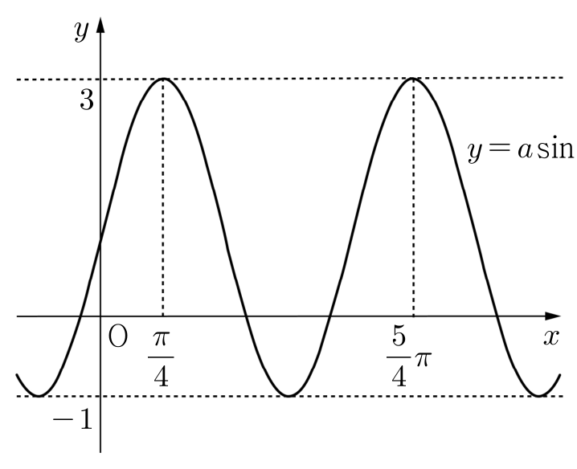
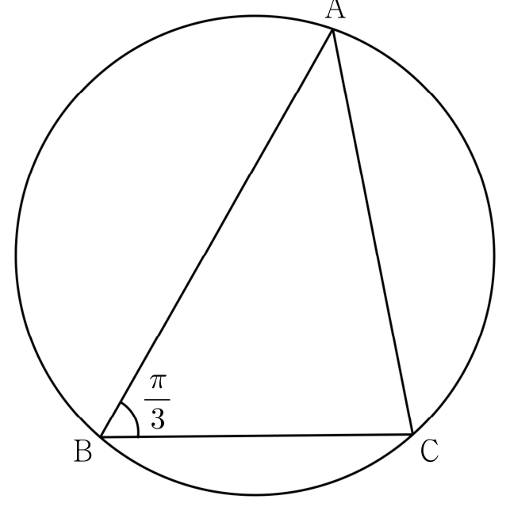
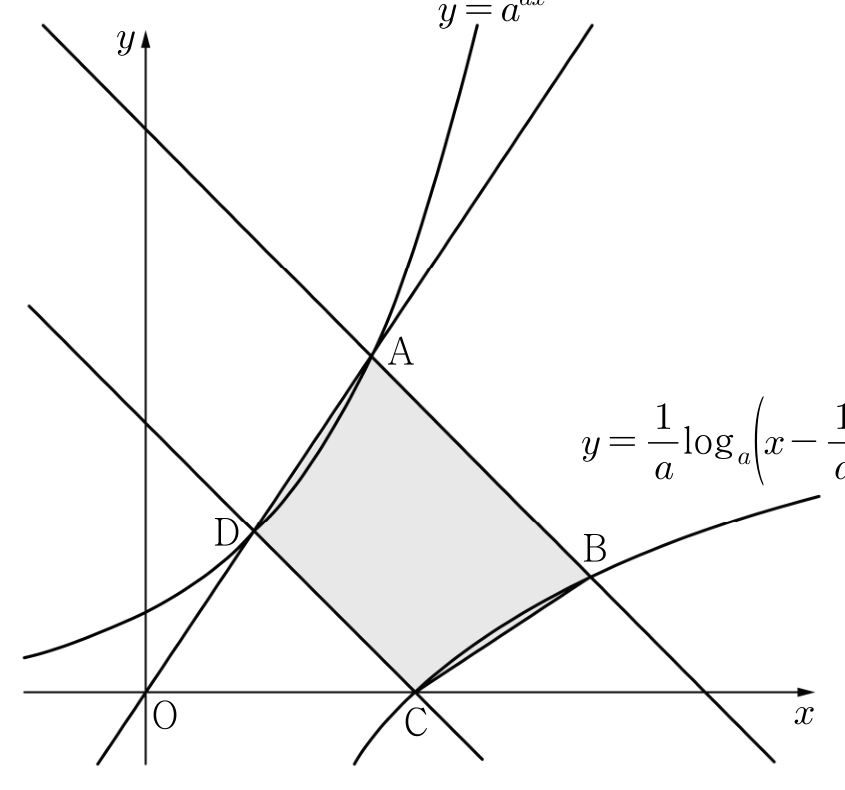

원본 (내부용)반지름의 길이가 \(2\)이고 넓이가 \(\frac{\pi}{3}\)인 부채꼴의 중심각의 크기는? [2점]
① \(\frac{\pi}{24}\)② \(\frac{\pi}{12}\)③ \(\frac{\pi}{8}\)④ \(\frac{\pi}{6}\)⑤ \(\frac{5}{24}\pi\)
원본 정답 ④
원본 풀이 (내부용)[출제의도] 부채꼴의 중심각의 크기 계산하기
부채꼴의 넓이를 \(S\), 중심각의 크기를 \(\theta\), 반지름의 길이를 \(r\)이라 하면
\(
S=\frac12r^2\theta
\)
이므로
\(
\frac{\pi}{3}=\frac12\times2^2\times\theta
\)
이다. 따라서 \(\theta=\frac{\pi}{6}\)이다.
생성기 숫자판 1/6 · G2M9-04#5반지름의 길이가 $12$이고 넓이가 $36\pi$인 부채꼴의 중심각의 크기로 옳은 것을 고르세요.
① $\frac{\pi}{2}$② $\pi$③ $\frac{3}{2}\pi$④ $2\pi$⑤ $\frac{5}{2}\pi$
정답① $\frac{\pi}{2}$ $S=\frac{1}{2}r^{2}\theta$이므로 $36\pi=\frac{1}{2}\times 12^{2}\times \theta$ 따라서 $\theta=\frac{\pi}{2}$
숫자: 원본 2 3 → 쌍둥이 12 36
생성기 숫자판 2/6 · G2M9-04#5반지름의 길이가 $12$이고 넓이가 $54\pi$인 부채꼴의 중심각의 크기로 옳은 것을 고르세요.
① $\frac{3}{4}\pi$② $\pi$③ $\frac{5}{4}\pi$④ $\frac{3}{2}\pi$⑤ $\frac{7}{4}\pi$
정답① $\frac{3}{4}\pi$ $S=\frac{1}{2}r^{2}\theta$이므로 $54\pi=\frac{1}{2}\times 12^{2}\times \theta$ 따라서 $\theta=\frac{3}{4}\pi$
숫자: 원본 2 3 → 쌍둥이 12 54
생성기 숫자판 3/6 · G2M9-04#5반지름의 길이가 $2$이고 넓이가 $\frac{2}{3}\pi$인 부채꼴의 중심각의 크기로 옳은 것을 고르세요.
① $\frac{\pi}{3}$② $\frac{2}{3}\pi$③ $\pi$④ $\frac{4}{3}\pi$⑤ $\frac{5}{3}\pi$
정답① $\frac{\pi}{3}$ $S=\frac{1}{2}r^{2}\theta$이므로 $\frac{2}{3}\pi=\frac{1}{2}\times 2^{2}\times \theta$ 따라서 $\theta=\frac{\pi}{3}$
숫자: 원본 2 3 → 쌍둥이 2 2 3 · 같은 수: 2 3
생성기 숫자판 4/6 · G2M9-04#5반지름의 길이가 $4$이고 넓이가 $6\pi$인 부채꼴의 중심각의 크기로 옳은 것을 고르세요.
① $\frac{\pi}{4}$② $\frac{\pi}{2}$③ $\frac{3}{4}\pi$④ $\pi$⑤ $\frac{5}{4}\pi$
정답③ $\frac{3}{4}\pi$ $S=\frac{1}{2}r^{2}\theta$이므로 $6\pi=\frac{1}{2}\times 4^{2}\times \theta$ 따라서 $\theta=\frac{3}{4}\pi$
숫자: 원본 2 3 → 쌍둥이 4 6
생성기 숫자판 5/6 · G2M9-04#5반지름의 길이가 $12$이고 넓이가 $60\pi$인 부채꼴의 중심각의 크기로 옳은 것을 고르세요.
① $\frac{\pi}{6}$② $\frac{\pi}{3}$③ $\frac{\pi}{2}$④ $\frac{2}{3}\pi$⑤ $\frac{5}{6}\pi$
정답⑤ $\frac{5}{6}\pi$ $S=\frac{1}{2}r^{2}\theta$이므로 $60\pi=\frac{1}{2}\times 12^{2}\times \theta$ 따라서 $\theta=\frac{5}{6}\pi$
숫자: 원본 2 3 → 쌍둥이 12 60
생성기 숫자판 6/6 · G2M9-04#5반지름의 길이가 $4$이고 넓이가 $\frac{20}{3}\pi$인 부채꼴의 중심각의 크기로 옳은 것을 고르세요.
① $\frac{2}{3}\pi$② $\frac{5}{6}\pi$③ $\pi$④ $\frac{7}{6}\pi$⑤ $\frac{4}{3}\pi$
정답② $\frac{5}{6}\pi$ $S=\frac{1}{2}r^{2}\theta$이므로 $\frac{20}{3}\pi=\frac{1}{2}\times 4^{2}\times \theta$ 따라서 $\theta=\frac{5}{6}\pi$
숫자: 원본 2 3 → 쌍둥이 4 20 3 · 같은 수: 3
4. 2025년 6월 4번 · 3점 · 수학Ⅰ 삼각함수 · G2M9-03#3
원본 (내부용)\(\frac{\pi}{2}<x<\frac{3}{2}\pi\)일 때, 방정식 \(\sqrt{3}\tan x=1\)의 해는? [3점]
① \(\frac{2}{3}\pi\)② \(\frac{5}{6}\pi\)③ \(\pi\)④ \(\frac{7}{6}\pi\)⑤ \(\frac{4}{3}\pi\)
원본 정답 ④
원본 풀이 (내부용)[출제의도] 삼각함수가 포함된 방정식 이해하기
\(
\frac{\pi}{2}<x<\frac{3\pi}{2}
\)
에서 방정식 \(\sqrt3\tan x=1\)의 해는 함수 \(y=\tan x\)의 그래프와 직선 \(y=\frac{\sqrt3}{3}\)의 교점의 \(x\)좌표이다.
도식: \(y=\tan x\) 그래프와 \(y=\frac{\sqrt3}{3}\) 수평선이 교차한다. \(x\)축에는 \(0,\frac{\pi}{6},\frac{\pi}{2},\pi,\frac{7\pi}{6},\frac{3\pi}{2}\)가 표시되어 있다.
따라서 \(x=\frac{7\pi}{6}\)이다.
생성기 숫자판 1/6 · G2M9-03#3$0< x< \pi$일 때, 방정식 $2\cos x+\sqrt{2}=0$의 해로 옳은 것을 고르세요.
① $\frac{\pi}{3}$② $\frac{\pi}{2}$③ $\frac{2}{3}\pi$④ $\frac{3}{4}\pi$⑤ $\frac{5}{6}\pi$
① \(\frac{9}{2}\sqrt{2}\)② \(5\sqrt{2}\)③ \(\frac{11}{2}\sqrt{2}\)④ \(6\sqrt{2}\)⑤ \(\frac{13}{2}\sqrt{2}\)
원본 정답 ②
원본 풀이 (내부용)[출제의도] 사인법칙 이해하기
도식: 삼각형 \(ABC\)에서 \(BC=5\), \(\angle B=\frac{\pi}{4}\), \(\angle A=\frac{\pi}{6}\)이다.
\(
\frac{\overline{BC}}{\sin A}
=\frac{\overline{AC}}{\sin B}
\)
이므로
\(
\frac5{\sin\frac{\pi}{6}}
=\frac{\overline{AC}}{\sin\frac{\pi}{4}},
\qquad
\frac5{1/2}=\frac{\overline{AC}}{\sqrt2/2}
\)
이다. 따라서 선분 \(AC\)의 길이는 \(5\sqrt2\)이다.
생성기 숫자판 1/5 · G2M9-10#8삼각형 $\mathrm{ABC}$에서 $\overline{\mathrm{BC}}=8,\ \angle A=\frac{\pi}{6},\ \angle B=\frac{2}{3}\pi$일 때, 선분 $\mathrm{AC}$의 길이로 옳은 것을 고르세요.
① $7\sqrt{3}$② $\frac{15\sqrt{3}}{2}$③ $8\sqrt{3}$④ $\frac{17\sqrt{3}}{2}$⑤ $9\sqrt{3}$
정답③ $8\sqrt{3}$ 사인법칙에 의하여 $\frac{\overline{\mathrm{BC}}}{\sin A}=\frac{\overline{\mathrm{AC}}}{\sin B}$ $\frac{8}{\sin\frac{\pi}{6}}=\frac{\overline{\mathrm{AC}}}{\sin\frac{2}{3}\pi}$ $\overline{\mathrm{AC}}=\frac{8\times \frac{\sqrt{3}}{2}}{\frac{1}{2}}=8\sqrt{3}$
숫자: 원본 5 6 4 → 쌍둥이 8 6 2 3 · 같은 수: 6
생성기 숫자판 2/5 · G2M9-10#8삼각형 $\mathrm{ABC}$에서 $\overline{\mathrm{BC}}=6,\ \angle A=\frac{\pi}{3},\ \angle B=\frac{\pi}{4}$일 때, 선분 $\mathrm{AC}$의 길이로 옳은 것을 고르세요.
① $\sqrt{6}$② $\frac{3\sqrt{6}}{2}$③ $2\sqrt{6}$④ $\frac{5\sqrt{6}}{2}$⑤ $3\sqrt{6}$
정답③ $2\sqrt{6}$ 사인법칙에 의하여 $\frac{\overline{\mathrm{BC}}}{\sin A}=\frac{\overline{\mathrm{AC}}}{\sin B}$ $\frac{6}{\sin\frac{\pi}{3}}=\frac{\overline{\mathrm{AC}}}{\sin\frac{\pi}{4}}$ $\overline{\mathrm{AC}}=\frac{6\times \frac{\sqrt{2}}{2}}{\frac{\sqrt{3}}{2}}=2\sqrt{6}$
숫자: 원본 5 6 4 → 쌍둥이 6 3 4 · 같은 수: 4 6
생성기 숫자판 3/5 · G2M9-10#8삼각형 $\mathrm{ABC}$에서 $\overline{\mathrm{BC}}=4,\ \angle A=\frac{\pi}{6},\ \angle B=\frac{\pi}{4}$일 때, 선분 $\mathrm{AC}$의 길이로 옳은 것을 고르세요.
① $3\sqrt{2}$② $\frac{7\sqrt{2}}{2}$③ $4\sqrt{2}$④ $\frac{9\sqrt{2}}{2}$⑤ $5\sqrt{2}$
정답③ $4\sqrt{2}$ 사인법칙에 의하여 $\frac{\overline{\mathrm{BC}}}{\sin A}=\frac{\overline{\mathrm{AC}}}{\sin B}$ $\frac{4}{\sin\frac{\pi}{6}}=\frac{\overline{\mathrm{AC}}}{\sin\frac{\pi}{4}}$ $\overline{\mathrm{AC}}=\frac{4\times \frac{\sqrt{2}}{2}}{\frac{1}{2}}=4\sqrt{2}$
숫자: 원본 5 6 4 → 쌍둥이 4 6 4 · 같은 수: 4 6
생성기 숫자판 4/5 · G2M9-10#8삼각형 $\mathrm{ABC}$에서 $\overline{\mathrm{BC}}=3,\ \angle A=\frac{\pi}{6},\ \angle B=\frac{\pi}{4}$일 때, 선분 $\mathrm{AC}$의 길이로 옳은 것을 고르세요.
① $2\sqrt{2}$② $\frac{5\sqrt{2}}{2}$③ $3\sqrt{2}$④ $\frac{7\sqrt{2}}{2}$⑤ $4\sqrt{2}$
정답③ $3\sqrt{2}$ 사인법칙에 의하여 $\frac{\overline{\mathrm{BC}}}{\sin A}=\frac{\overline{\mathrm{AC}}}{\sin B}$ $\frac{3}{\sin\frac{\pi}{6}}=\frac{\overline{\mathrm{AC}}}{\sin\frac{\pi}{4}}$ $\overline{\mathrm{AC}}=\frac{3\times \frac{\sqrt{2}}{2}}{\frac{1}{2}}=3\sqrt{2}$
숫자: 원본 5 6 4 → 쌍둥이 3 6 4 · 같은 수: 4 6
생성기 숫자판 5/5 · G2M9-10#8삼각형 $\mathrm{ABC}$에서 $\overline{\mathrm{BC}}=5,\ \angle A=\frac{\pi}{4},\ \angle B=\frac{\pi}{3}$일 때, 선분 $\mathrm{AC}$의 길이로 옳은 것을 고르세요.
① $\frac{3\sqrt{6}}{2}$② $2\sqrt{6}$③ $\frac{5\sqrt{6}}{2}$④ $3\sqrt{6}$⑤ $\frac{7\sqrt{6}}{2}$
정답③ $\frac{5\sqrt{6}}{2}$ 사인법칙에 의하여 $\frac{\overline{\mathrm{BC}}}{\sin A}=\frac{\overline{\mathrm{AC}}}{\sin B}$ $\frac{5}{\sin\frac{\pi}{4}}=\frac{\overline{\mathrm{AC}}}{\sin\frac{\pi}{3}}$ $\overline{\mathrm{AC}}=\frac{5\times \frac{\sqrt{3}}{2}}{\frac{\sqrt{2}}{2}}=\frac{5\sqrt{6}}{2}$
숫자: 원본 5 6 4 → 쌍둥이 5 4 3 · 같은 수: 4 5
7. 2025년 6월 7번 · 3점 · 수학Ⅰ 삼각함수 · G2M9-11#0
원본 (내부용)\(\frac{\pi}{2}<\theta<\pi\)인 \(\theta\)에 대하여 \( \frac{\cos\theta}{\tan\theta}+\sin\theta=\sqrt{3} \) 일 때, \(\cos\theta\)의 값은? [3점]
① \(-\frac{\sqrt{6}}{3}\)② \(-\frac{\sqrt{3}}{3}\)③ \(-\frac13\)④ \(\frac{\sqrt{3}}{3}\)⑤ \(\frac{\sqrt{6}}{3}\)
원본 정답 ①
원본 풀이 (내부용)[출제의도] 삼각함수 사이의 관계 이해하기
\(
\tan\theta+\sin\theta=\sqrt3
\)
에서
\(
\frac{\cos^2\theta}{\sin\theta}+\sin\theta
=\frac{\cos^2\theta+\sin^2\theta}{\sin\theta}
=\frac1{\sin\theta}
=\sqrt3
\)
이므로 \(\sin\theta=\frac1{\sqrt3}\)이다.
\(
\sin^2\theta+\cos^2\theta=1
\)
이므로
\(
\frac13+\cos^2\theta=1,\qquad \cos^2\theta=\frac23
\)
이다. \(\frac{\pi}{2}<\theta<\pi\)에서 \(\cos\theta<0\)이므로
\(
\cos\theta=-\frac{\sqrt6}{3}
\)
이다.
생성기 숫자판 1/6 · G2M9-11#0$\frac{\pi}{2}<\theta<\pi$인 $\theta$에 대하여 $\frac{\cos\theta}{\tan\theta}+\sin\theta=\frac{13}{5}$일 때, $\cos\theta$의 값으로 옳은 것을 고르세요.
① $-\frac{13}{13}$② $-\frac{12}{13}$③ $-\frac{5}{13}$④ $\frac{5}{13}$⑤ $\frac{12}{13}$
생성기 숫자판 2/6 · G2M9-11#0$\frac{\pi}{2}<\theta<\pi$인 $\theta$에 대하여 $\frac{\cos\theta}{\tan\theta}+\sin\theta=\frac{421}{420}$일 때, $\cos\theta$의 값으로 옳은 것을 고르세요.
① $-\frac{420}{421}$② $-\frac{7}{8}$③ $-\frac{29}{421}$④ $\frac{29}{421}$⑤ $\frac{420}{421}$
생성기 숫자판 3/6 · G2M9-11#0$\frac{\pi}{2}<\theta<\pi$인 $\theta$에 대하여 $\frac{\cos\theta}{\tan\theta}+\sin\theta=\frac{61}{11}$일 때, $\cos\theta$의 값으로 옳은 것을 고르세요.
① $-\frac{61}{61}$② $-\frac{60}{61}$③ $-\frac{11}{61}$④ $\frac{11}{61}$⑤ $\frac{60}{61}$
생성기 숫자판 4/6 · G2M9-11#0$\frac{\pi}{2}<\theta<\pi$인 $\theta$에 대하여 $\frac{\cos\theta}{\tan\theta}+\sin\theta=\frac{1301}{1300}$일 때, $\cos\theta$의 값으로 옳은 것을 고르세요.
① $-\frac{1300}{1301}$② $-\frac{25}{27}$③ $-\frac{51}{1301}$④ $\frac{51}{1301}$⑤ $\frac{1300}{1301}$
생성기 숫자판 5/6 · G2M9-11#0$\frac{\pi}{2}<\theta<\pi$인 $\theta$에 대하여 $\frac{\cos\theta}{\tan\theta}+\sin\theta=\frac{25}{7}$일 때, $\cos\theta$의 값으로 옳은 것을 고르세요.
① $-\frac{25}{25}$② $-\frac{24}{25}$③ $-\frac{7}{25}$④ $\frac{7}{25}$⑤ $\frac{24}{25}$
생성기 숫자판 6/6 · G2M9-11#0$\frac{\pi}{2}<\theta<\pi$인 $\theta$에 대하여 $\frac{\cos\theta}{\tan\theta}+\sin\theta=\frac{925}{924}$일 때, $\cos\theta$의 값으로 옳은 것을 고르세요.
① $-\frac{924}{925}$② $-\frac{21}{23}$③ $-\frac{43}{925}$④ $\frac{43}{925}$⑤ $\frac{924}{925}$
원본 (내부용)함수 \(y=\log_{(-a^2-a+7)}x\)가 \(x\)의 값이 증가할 때 \(y\)의 값도 증가하도록 하는 모든 정수 \(a\)의 값의 합은? [3점]
① \(-6\)② \(-5\)③ \(-4\)④ \(-3\)⑤ \(-2\)
원본 정답 ⑤
원본 풀이 (내부용)[출제의도] 로그함수의 그래프 이해하기
함수 \(y=\log_{(-a^2-a+7)}x\)에서 \(-a^2-a+7>1\)이면 \(x\)의 값이 증가할 때 \(y\)의 값도 증가한다.
\(
a^2+a-6<0
\)
에서
\(
(a-2)(a+3)<0
\)
이므로 \(-3<a<2\)이다. 따라서 \(a=-2,-1,0,1\)이므로 모든 정수 \(a\)의 값의 합은 \(-2\)이다.
생성기 숫자판 1/5 · G2M9-11#1함수 $y=\log_{\left(-a^{2}-3a+5\right)}x$가 $x$의 값이 증가할 때 $y$의 값도 증가하도록 하는 모든 정수 $a$의 값의 합으로 옳은 것을 고르세요.
① $-6$② $-5$③ $-4$④ $-3$⑤ $-2$
정답① $-6$ $x$의 값이 증가할 때 $y$의 값도 증가하려면 밑이 $1$보다 커야 하므로 $-a^{2}-3a+5>1$ $a^{2}+3a-4<0$, $-4<a<1$ 따라서 정수 $a$는 $-3,\ -2,\ -1,\ 0$이고 그 합은 $-6$
숫자: 원본 7 → 쌍둥이 3 5
생성기 숫자판 2/5 · G2M9-11#1함수 $y=\log_{\left(-a^{2}-3a+11\right)}x$가 $x$의 값이 증가할 때 $y$의 값도 증가하도록 하는 모든 정수 $a$의 값의 합으로 옳은 것을 고르세요.
① $-12$② $-11$③ $-10$④ $-9$⑤ $-8$
정답④ $-9$ $x$의 값이 증가할 때 $y$의 값도 증가하려면 밑이 $1$보다 커야 하므로 $-a^{2}-3a+11>1$ $a^{2}+3a-10<0$, $-5<a<2$ 따라서 정수 $a$는 $-4,\ -3,\ \cdots,\ 1$이고 그 합은 $-9$
숫자: 원본 7 → 쌍둥이 3 11
생성기 숫자판 3/5 · G2M9-11#1함수 $y=\log_{\left(-a^{2}-4a+6\right)}x$가 $x$의 값이 증가할 때 $y$의 값도 증가하도록 하는 모든 정수 $a$의 값의 합으로 옳은 것을 고르세요.
① $-10$② $-9$③ $-8$④ $-7$⑤ $-6$
정답① $-10$ $x$의 값이 증가할 때 $y$의 값도 증가하려면 밑이 $1$보다 커야 하므로 $-a^{2}-4a+6>1$ $a^{2}+4a-5<0$, $-5<a<1$ 따라서 정수 $a$는 $-4,\ -3,\ -2,\ -1,\ 0$이고 그 합은 $-10$
숫자: 원본 7 → 쌍둥이 4 6
생성기 숫자판 4/5 · G2M9-11#1함수 $y=\log_{\left(-a^{2}-2a+16\right)}x$가 $x$의 값이 증가할 때 $y$의 값도 증가하도록 하는 모든 정수 $a$의 값의 합으로 옳은 것을 고르세요.
① $-11$② $-10$③ $-9$④ $-8$⑤ $-7$
정답⑤ $-7$ $x$의 값이 증가할 때 $y$의 값도 증가하려면 밑이 $1$보다 커야 하므로 $-a^{2}-2a+16>1$ $a^{2}+2a-15<0$, $-5<a<3$ 따라서 정수 $a$는 $-4,\ -3,\ \cdots,\ 2$이고 그 합은 $-7$
숫자: 원본 7 → 쌍둥이 2 16
생성기 숫자판 5/5 · G2M9-11#1함수 $y=\log_{\left(-a^{2}+a+7\right)}x$가 $x$의 값이 증가할 때 $y$의 값도 증가하도록 하는 모든 정수 $a$의 값의 합으로 옳은 것을 고르세요.
① $-1$② $0$③ $1$④ $2$⑤ $3$
정답④ $2$ $x$의 값이 증가할 때 $y$의 값도 증가하려면 밑이 $1$보다 커야 하므로 $-a^{2}+a+7>1$ $a^{2}-a-6<0$, $-2<a<3$ 따라서 정수 $a$는 $-1,\ 0,\ 1,\ 2$이고 그 합은 $2$
숫자: 원본 7 → 쌍둥이 7 · 같은 수: 7
9. 2025년 6월 9번 · 3점 · 수학Ⅰ 삼각함수 · G2f-07#0
원본 (내부용)두 양수 \(a,\ b\)에 대하여 함수 \(y=a\sin bx+1\)의 그래프가 그림과 같을 때, \(a+b\)의 값은? [3점] 그림: 가로축은 \(x\), 세로축은 \(y\)인 좌표평면에 \(y=a\sin bx+1\)의 곡선이 그려져 있다. 곡선의 최댓값은 \(3\), 최솟값은 \(-1\)이며, 두 봉우리의 \(x\)좌표는 각각 \(\frac{\pi}{4}\), \(\frac{5\pi}{4}\)로 표시되어 있다.

① \(3\)② \(\frac72\)③ \(4\)④ \(\frac92\)⑤ \(5\)
원본 정답 ③
원본 풀이 (내부용)[출제의도] 삼각함수의 그래프 이해하기
도식: \(y=a\sin bx+1\) 그래프의 최댓값은 \(3\), 최솟값은 \(-1\)이다. 극댓값을 갖는 \(x\)좌표는 \(\frac{\pi}{4}\), \(\frac{5\pi}{4}\)이다.
함수 \(y=a\sin bx+1\)의 최댓값이 \(3\), 최솟값이 \(-1\)이므로 \(a=2\)이다.
주기는 \(\frac{5\pi}{4}-\frac{\pi}{4}=\pi\)이므로 \(\frac{2\pi}{b}=\pi\), \(b=2\)이다.
따라서 \(a+b=2+2=4\)이다.
생성기 숫자판 1/6 · G2f-07#0두 양수 $a$, $b$에 대하여 함수 $y=a\sin bx+3$의 그래프가 그림과 같고 최댓값이 $9$, 주기가 $\frac{2\pi}{6}$일 때, $a+b$의 값으로 옮은 것을 고르세요.
① $10$② $11$③ $12$④ $13$⑤ $14$
정답③ $12$ $a>0$이므로 최댓값은 $a+3=9$에서 $a=6$ 이웃한 두 최댓점 사이의 거리가 $\frac{2\pi}{6}$이므로 주기는 $\frac{2\pi}{6}$ $b=6$이므로 구하는 값은 $a+b=6+6=12$
숫자: 원본 1 1 3 1 4 5 4 → 쌍둥이 3 9 2 6 · 같은 수: 3
생성기 숫자판 2/6 · G2f-07#0두 양수 $a$, $b$에 대하여 함수 $y=a\sin bx+3$의 그래프가 그림과 같고 최댓값이 $9$, 주기가 $\frac{2\pi}{5}$일 때, $a+b$의 값으로 옮은 것을 고르세요.
① $9$② $10$③ $11$④ $12$⑤ $13$
정답③ $11$ $a>0$이므로 최댓값은 $a+3=9$에서 $a=6$ 이웃한 두 최댓점 사이의 거리가 $\frac{2\pi}{5}$이므로 주기는 $\frac{2\pi}{5}$ $b=5$이므로 구하는 값은 $a+b=6+5=11$
숫자: 원본 1 1 3 1 4 5 4 → 쌍둥이 3 9 2 5 · 같은 수: 3 5
생성기 숫자판 3/6 · G2f-07#0두 양수 $a$, $b$에 대하여 함수 $y=a\sin bx+3$의 그래프가 그림과 같고 최댓값이 $6$, 주기가 $\frac{2\pi}{2}$일 때, $a+b$의 값으로 옮은 것을 고르세요.
① $3$② $4$③ $5$④ $6$⑤ $7$
정답③ $5$ $a>0$이므로 최댓값은 $a+3=6$에서 $a=3$ 이웃한 두 최댓점 사이의 거리가 $\frac{2\pi}{2}$이므로 주기는 $\frac{2\pi}{2}$ $b=2$이므로 구하는 값은 $a+b=3+2=5$
숫자: 원본 1 1 3 1 4 5 4 → 쌍둥이 3 6 2 2 · 같은 수: 3
생성기 숫자판 4/6 · G2f-07#0두 양수 $a$, $b$에 대하여 함수 $y=a\sin bx+3$의 그래프가 그림과 같고 최댓값이 $9$, 주기가 $\frac{2\pi}{7}$일 때, $a+b$의 값으로 옮은 것을 고르세요.
① $11$② $12$③ $13$④ $14$⑤ $15$
정답③ $13$ $a>0$이므로 최댓값은 $a+3=9$에서 $a=6$ 이웃한 두 최댓점 사이의 거리가 $\frac{2\pi}{7}$이므로 주기는 $\frac{2\pi}{7}$ $b=7$이므로 구하는 값은 $a+b=6+7=13$
숫자: 원본 1 1 3 1 4 5 4 → 쌍둥이 3 9 2 7 · 같은 수: 3
생성기 숫자판 5/6 · G2f-07#0두 양수 $a$, $b$에 대하여 함수 $y=a\sin bx+3$의 그래프가 그림과 같고 최댓값이 $7$, 주기가 $\frac{2\pi}{5}$일 때, $a+b$의 값으로 옮은 것을 고르세요.
① $7$② $8$③ $9$④ $10$⑤ $11$
정답③ $9$ $a>0$이므로 최댓값은 $a+3=7$에서 $a=4$ 이웃한 두 최댓점 사이의 거리가 $\frac{2\pi}{5}$이므로 주기는 $\frac{2\pi}{5}$ $b=5$이므로 구하는 값은 $a+b=4+5=9$
숫자: 원본 1 1 3 1 4 5 4 → 쌍둥이 3 7 2 5 · 같은 수: 3 5
생성기 숫자판 6/6 · G2f-07#0두 양수 $a$, $b$에 대하여 함수 $y=a\sin bx+3$의 그래프가 그림과 같고 최댓값이 $9$, 주기가 $\frac{2\pi}{2}$일 때, $a+b$의 값으로 옮은 것을 고르세요.
① $6$② $7$③ $8$④ $9$⑤ $10$
정답③ $8$ $a>0$이므로 최댓값은 $a+3=9$에서 $a=6$ 이웃한 두 최댓점 사이의 거리가 $\frac{2\pi}{2}$이므로 주기는 $\frac{2\pi}{2}$ $b=2$이므로 구하는 값은 $a+b=6+2=8$
숫자: 원본 1 1 3 1 4 5 4 → 쌍둥이 3 9 2 2 · 같은 수: 3
10. 2025년 6월 10번 · 3점 · 수학Ⅰ 지수·로그 · G2M9-11#2
원본 (내부용)함수 \(y=2^{-x+a}+a\)의 역함수의 그래프가 점 \((a+1,1)\)을 지날 때, 상수 \(a\)의 값은? [3점]
① \(1\)② \(2\)③ \(3\)④ \(4\)⑤ \(5\)
원본 정답 ①
원본 풀이 (내부용)[출제의도] 지수함수의 역함수 이해하기
함수 \(y=2^{-x+a}+a\)의 역함수의 그래프가 점 \((a+1,1)\)을 지나므로 함수 \(y=2^{-x+a}+a\)의 그래프는 점 \((1,a+1)\)을 지난다.
따라서 \(a+1=2^{-1+a}+a\)이고 \(-1+a=0\)이므로 \(a=1\)이다.
생성기 숫자판 1/6 · G2M9-11#2함수 $y=7^{-x+a}+a$의 역함수의 그래프가 점 $\left(a+343,\ 3\right)$을 지날 때, 상수 $a$의 값으로 옳은 것을 고르세요.
원본 (내부용)\(x\leq 3\)에서 정의된 함수 \( f(x)=2^{2x}-2^{x+2}+6 \) 의 최댓값과 최솟값의 합은? [3점]
① \(32\)② \(36\)③ \(40\)④ \(44\)⑤ \(48\)
원본 정답 ③
원본 풀이 (내부용)[출제의도] 지수함수의 그래프 이해하기
함수 \(y=2^{2x}-2^{x+2}+6\)에서 \(2^x=t\)라 하면 \(x\le3\)에서 \(0<t\le8\)이고
\(
y=t^2-4t+6=(t-2)^2+2
\)
이다.
\(t=2\)일 때 최솟값은 \(2\), \(t=8\)일 때 최댓값은 \(38\)이다. 따라서 \(2+38=40\)이다.
생성기 숫자판 1/5 · G2M9-11#3$x\le 3$에서 정의된 함수 $f\left(x\right)=2^{2x}-2^{x+1}+3$의 최댓값과 최솟값의 합으로 옳은 것을 고르세요.
① $49$② $53$③ $57$④ $61$⑤ $65$
정답② $53$ $2^{x}=t$라 하면 $x\le 3$에서 $0<t\le 8$ $f\left(x\right)=t^{2}-2t+3=\left(t-1\right)^{2}+2$ $t=1$일 때 최솟값 $2$, $t=8$일 때 최댓값 $64-16+3=51$ 따라서 최댓값과 최솟값의 합은 $51+2=53$
숫자: 원본 3 2 2 2 6 → 쌍둥이 3 2 2 1 3 · 같은 수: 2 3
생성기 숫자판 2/5 · G2M9-11#3$x\le 3$에서 정의된 함수 $f\left(x\right)=2^{2x}-2^{x+2}+9$의 최댓값과 최솟값의 합으로 옳은 것을 고르세요.
① $42$② $46$③ $50$④ $54$⑤ $58$
정답② $46$ $2^{x}=t$라 하면 $x\le 3$에서 $0<t\le 8$ $f\left(x\right)=t^{2}-4t+9=\left(t-2\right)^{2}+5$ $t=2$일 때 최솟값 $5$, $t=8$일 때 최댓값 $64-32+9=41$ 따라서 최댓값과 최솟값의 합은 $41+5=46$
숫자: 원본 3 2 2 2 6 → 쌍둥이 3 2 2 2 9 · 같은 수: 2 3
생성기 숫자판 3/5 · G2M9-11#3$x\le 3$에서 정의된 함수 $f\left(x\right)=2^{2x}-2^{x+2}+11$의 최댓값과 최솟값의 합으로 옳은 것을 고르세요.
① $42$② $46$③ $50$④ $54$⑤ $58$
정답③ $50$ $2^{x}=t$라 하면 $x\le 3$에서 $0<t\le 8$ $f\left(x\right)=t^{2}-4t+11=\left(t-2\right)^{2}+7$ $t=2$일 때 최솟값 $7$, $t=8$일 때 최댓값 $64-32+11=43$ 따라서 최댓값과 최솟값의 합은 $43+7=50$
숫자: 원본 3 2 2 2 6 → 쌍둥이 3 2 2 2 11 · 같은 수: 2 3
생성기 숫자판 4/5 · G2M9-11#3$x\le 3$에서 정의된 함수 $f\left(x\right)=2^{2x}-2^{x+2}+12$의 최댓값과 최솟값의 합으로 옳은 것을 고르세요.
① $36$② $40$③ $44$④ $48$⑤ $52$
정답⑤ $52$ $2^{x}=t$라 하면 $x\le 3$에서 $0<t\le 8$ $f\left(x\right)=t^{2}-4t+12=\left(t-2\right)^{2}+8$ $t=2$일 때 최솟값 $8$, $t=8$일 때 최댓값 $64-32+12=44$ 따라서 최댓값과 최솟값의 합은 $44+8=52$
숫자: 원본 3 2 2 2 6 → 쌍둥이 3 2 2 2 12 · 같은 수: 2 3
생성기 숫자판 5/5 · G2M9-11#3$x\le 3$에서 정의된 함수 $f\left(x\right)=2^{2x}-2^{x+1}+5$의 최댓값과 최솟값의 합으로 옳은 것을 고르세요.
① $41$② $45$③ $49$④ $53$⑤ $57$
정답⑤ $57$ $2^{x}=t$라 하면 $x\le 3$에서 $0<t\le 8$ $f\left(x\right)=t^{2}-2t+5=\left(t-1\right)^{2}+4$ $t=1$일 때 최솟값 $4$, $t=8$일 때 최댓값 $64-16+5=53$ 따라서 최댓값과 최솟값의 합은 $53+4=57$
숫자: 원본 3 2 2 2 6 → 쌍둥이 3 2 2 1 5 · 같은 수: 2 3
12. 2025년 6월 12번 · 3점 · 수학Ⅰ 삼각함수 · G2M9-11#4
원본 (내부용)\(\overline{AB}:\overline{BC}=3:2,\ \angle ABC=\frac{\pi}{3}\)인 삼각형 \(ABC\)가 있다. 삼각형 \(ABC\)의 외접원의 넓이가 \(7\pi\)일 때, 삼각형 \(ABC\)의 넓이는? [3점]

① \(\frac92\sqrt{3}\)② \(\frac{19}{4}\sqrt{3}\)③ \(5\sqrt{3}\)④ \(\frac{21}{4}\sqrt{3}\)⑤ \(\frac{11}{2}\sqrt{3}\)
그림·참고 그림: 삼각형 \(ABC\)가 원에 내접한다. \(A\)는 원의 위쪽, \(B\)는 왼쪽 아래, \(C\)는 오른쪽 아래에 있고, 선분 \(AB,\ BC,\ CA\)가 그려져 있다. \(B\)의 각은 \(\frac{\pi}{3}\)으로 표시되어 있다.
원본 정답 ①
원본 풀이 (내부용)[출제의도] 사인법칙과 코사인법칙 이해하기
도식: 삼각형 \(ABC\)가 원에 내접한다. \(AB=3k\), \(BC=2k\), \(\angle ABC=\frac{\pi}{3}\)로 표시되어 있다.
삼각형 \(ABC\)의 외접원의 반지름의 길이를 \(R\)이라 하면 원의 넓이가 \(7\pi\)이므로 \(R=\sqrt7\)이다. 삼각형 \(ABC\)에서 사인법칙에 의하여
\(
\frac{\overline{AC}}{\sin\frac{\pi}{3}}=2R=2\sqrt7
\)
이므로
\(
\overline{AC}=2\sqrt7\times\sin\frac{\pi}{3}=\sqrt{21}\qquad\cdots\cdots\text{(ㄱ)}
\)
\(
\overline{AB}:\overline{BC}=3:2
\)
이므로 \(\overline{AB}=3k\), \(\overline{BC}=2k\) \((k>0)\)이다. 삼각형 \(ABC\)에서 코사인법칙에 의하여
\(
\overline{AC}^2=(3k)^2+(2k)^2-2\times3k\times2k\times\cos\frac{\pi}{3}
=7k^2\qquad\cdots\cdots\text{(ㄴ)}
\)
이다.
(ㄱ), (ㄴ)에 의하여 \(k^2=3,\ k=\sqrt3\)이다. 따라서 삼각형 \(ABC\)의 넓이는
\(
\frac12\overline{AB}\times\overline{BC}\times\sin\frac{\pi}{3}
=\frac12\times3\sqrt3\times2\sqrt3\times\frac{\sqrt3}{2}
=\frac92\sqrt3
\)
이다.
생성기 숫자판 1/5 · G2M9-11#4$\overline{\mathrm{AB}}:\overline{\mathrm{BC}}=1:2,\ \angle\mathrm{ABC}=\frac{\pi}{3}$인 삼각형 $\mathrm{ABC}$가 있습니다. 삼각형 $\mathrm{ABC}$의 외접원의 넓이가 $2\pi$일 때, 삼각형 $\mathrm{ABC}$의 넓이로 옳은 것을 고르세요.
① $\frac{\sqrt{3}}{2}$② $\frac{3\sqrt{3}}{4}$③ $\sqrt{3}$④ $\frac{5\sqrt{3}}{4}$⑤ $\frac{3\sqrt{3}}{2}$
정답③ $\sqrt{3}$ 외접원의 반지름의 길이를 $R$라 하면 $\pi R^{2}=2\pi$, $R=\sqrt{2}$ 사인법칙에 의하여 $\overline{\mathrm{AC}}=2R\sin\frac{\pi}{3}=2\times \sqrt{2}\times\frac{\sqrt{3}}{2}=\sqrt{6}$ $\overline{\mathrm{AB}}=t$, $\overline{\mathrm{BC}}=2t$ ($t>0$)라 하면 코사인법칙에 의하여 $6=t^{2}+4t^{2}-2\times t\times 2t\times\frac{1}{2}=3t^{2}$ $t^{2}=2$이므로 넓이는 $\frac{1}{2}\times t\times 2t\times\frac{\sqrt{3}}{2}=\frac{2\sqrt{3}}{4}t^{2}=\sqrt{3}$
숫자: 원본 3 2 3 7 → 쌍둥이 1 2 3 2 · 같은 수: 2 3
생성기 숫자판 2/5 · G2M9-11#4$\overline{\mathrm{AB}}:\overline{\mathrm{BC}}=2:1,\ \angle\mathrm{ABC}=\frac{\pi}{3}$인 삼각형 $\mathrm{ABC}$가 있습니다. 삼각형 $\mathrm{ABC}$의 외접원의 넓이가 $2\pi$일 때, 삼각형 $\mathrm{ABC}$의 넓이로 옳은 것을 고르세요.
① $\frac{\sqrt{3}}{2}$② $\frac{3\sqrt{3}}{4}$③ $\sqrt{3}$④ $\frac{5\sqrt{3}}{4}$⑤ $\frac{3\sqrt{3}}{2}$
정답③ $\sqrt{3}$ 외접원의 반지름의 길이를 $R$라 하면 $\pi R^{2}=2\pi$, $R=\sqrt{2}$ 사인법칙에 의하여 $\overline{\mathrm{AC}}=2R\sin\frac{\pi}{3}=2\times \sqrt{2}\times\frac{\sqrt{3}}{2}=\sqrt{6}$ $\overline{\mathrm{AB}}=2t$, $\overline{\mathrm{BC}}=t$ ($t>0$)라 하면 코사인법칙에 의하여 $6=4t^{2}+t^{2}-2\times 2t\times t\times\frac{1}{2}=3t^{2}$ $t^{2}=2$이므로 넓이는 $\frac{1}{2}\times 2t\times t\times\frac{\sqrt{3}}{2}=\frac{2\sqrt{3}}{4}t^{2}=\sqrt{3}$
숫자: 원본 3 2 3 7 → 쌍둥이 2 1 3 2 · 같은 수: 2 3
생성기 숫자판 3/5 · G2M9-11#4$\overline{\mathrm{AB}}:\overline{\mathrm{BC}}=4:3,\ \angle\mathrm{ABC}=\frac{\pi}{3}$인 삼각형 $\mathrm{ABC}$가 있습니다. 삼각형 $\mathrm{ABC}$의 외접원의 넓이가 $13\pi$일 때, 삼각형 $\mathrm{ABC}$의 넓이로 옳은 것을 고르세요.
① $\frac{17\sqrt{3}}{2}$② $\frac{35\sqrt{3}}{4}$③ $9\sqrt{3}$④ $\frac{37\sqrt{3}}{4}$⑤ $\frac{19\sqrt{3}}{2}$
정답③ $9\sqrt{3}$ 외접원의 반지름의 길이를 $R$라 하면 $\pi R^{2}=13\pi$, $R=\sqrt{13}$ 사인법칙에 의하여 $\overline{\mathrm{AC}}=2R\sin\frac{\pi}{3}=2\times \sqrt{13}\times\frac{\sqrt{3}}{2}=\sqrt{39}$ $\overline{\mathrm{AB}}=4t$, $\overline{\mathrm{BC}}=3t$ ($t>0$)라 하면 코사인법칙에 의하여 $39=16t^{2}+9t^{2}-2\times 4t\times 3t\times\frac{1}{2}=13t^{2}$ $t^{2}=3$이므로 넓이는 $\frac{1}{2}\times 4t\times 3t\times\frac{\sqrt{3}}{2}=\frac{12\sqrt{3}}{4}t^{2}=9\sqrt{3}$
숫자: 원본 3 2 3 7 → 쌍둥이 4 3 3 13 · 같은 수: 3
생성기 숫자판 4/5 · G2M9-11#4$\overline{\mathrm{AB}}:\overline{\mathrm{BC}}=1:2,\ \angle\mathrm{ABC}=\frac{\pi}{3}$인 삼각형 $\mathrm{ABC}$가 있습니다. 삼각형 $\mathrm{ABC}$의 외접원의 넓이가 $4\pi$일 때, 삼각형 $\mathrm{ABC}$의 넓이로 옳은 것을 고르세요.
① $\frac{3\sqrt{3}}{2}$② $\frac{7\sqrt{3}}{4}$③ $2\sqrt{3}$④ $\frac{9\sqrt{3}}{4}$⑤ $\frac{5\sqrt{3}}{2}$
정답③ $2\sqrt{3}$ 외접원의 반지름의 길이를 $R$라 하면 $\pi R^{2}=4\pi$, $R=2$ 사인법칙에 의하여 $\overline{\mathrm{AC}}=2R\sin\frac{\pi}{3}=2\times 2\times\frac{\sqrt{3}}{2}=2\sqrt{3}$ $\overline{\mathrm{AB}}=t$, $\overline{\mathrm{BC}}=2t$ ($t>0$)라 하면 코사인법칙에 의하여 $12=t^{2}+4t^{2}-2\times t\times 2t\times\frac{1}{2}=3t^{2}$ $t^{2}=4$이므로 넓이는 $\frac{1}{2}\times t\times 2t\times\frac{\sqrt{3}}{2}=\frac{2\sqrt{3}}{4}t^{2}=2\sqrt{3}$
숫자: 원본 3 2 3 7 → 쌍둥이 1 2 3 4 · 같은 수: 2 3
생성기 숫자판 5/5 · G2M9-11#4$\overline{\mathrm{AB}}:\overline{\mathrm{BC}}=2:1,\ \angle\mathrm{ABC}=\frac{\pi}{3}$인 삼각형 $\mathrm{ABC}$가 있습니다. 삼각형 $\mathrm{ABC}$의 외접원의 넓이가 $4\pi$일 때, 삼각형 $\mathrm{ABC}$의 넓이로 옳은 것을 고르세요.
① $\frac{3\sqrt{3}}{2}$② $\frac{7\sqrt{3}}{4}$③ $2\sqrt{3}$④ $\frac{9\sqrt{3}}{4}$⑤ $\frac{5\sqrt{3}}{2}$
정답③ $2\sqrt{3}$ 외접원의 반지름의 길이를 $R$라 하면 $\pi R^{2}=4\pi$, $R=2$ 사인법칙에 의하여 $\overline{\mathrm{AC}}=2R\sin\frac{\pi}{3}=2\times 2\times\frac{\sqrt{3}}{2}=2\sqrt{3}$ $\overline{\mathrm{AB}}=2t$, $\overline{\mathrm{BC}}=t$ ($t>0$)라 하면 코사인법칙에 의하여 $12=4t^{2}+t^{2}-2\times 2t\times t\times\frac{1}{2}=3t^{2}$ $t^{2}=4$이므로 넓이는 $\frac{1}{2}\times 2t\times t\times\frac{\sqrt{3}}{2}=\frac{2\sqrt{3}}{4}t^{2}=2\sqrt{3}$
숫자: 원본 3 2 3 7 → 쌍둥이 2 1 3 4 · 같은 수: 2 3
13. 2025년 6월 13번 · 3점 · 수학Ⅰ 삼각함수 · G2M9-11#5
원본 (내부용)\(\frac{\pi}{2}<t<\pi\)인 실수 \(t\)에 대하여 이차방정식 \( 5x^2+x+k=0\quad(k\text{는 상수}) \) 가 두 실근 \(\sin t,\ \cos t\)를 가질 때, \(k\times\tan t\)의 값은? [3점]
① \(\frac32\)② \(\frac95\)③ \(\frac{21}{10}\)④ \(\frac{12}{5}\)⑤ \(\frac{27}{10}\)
원본 정답 ②
원본 풀이 (내부용)[출제의도] 삼각함수의 성질을 이용하여 이차방정식 문제 해결하기
\(\frac{\pi}{2}<t<\pi\)인 실수 \(t\)에 대하여 이차방정식
\(
5x^2+x+k=0
\)
의 두 실근은 \(\sin t,\ \cos t\)이므로
\(
\sin t+\cos t=-\frac15,\qquad \sin t\cos t=\frac{k}{5}
\)
이다.
\(
(\sin t+\cos t)^2=\frac1{25}
\)
이므로
\(
\sin^2t+2\sin t\cos t+\cos^2t=\frac1{25}.
\)
\(\sin^2t+\cos^2t=1\)이므로 \(\sin t\cos t=-\frac{12}{25}\)이다.
\(
\frac{k}{5}=-\frac{12}{25}
\)
에서 \(k=-\frac{12}{5}\)이다. \(\frac{\pi}{2}<t<\pi\)에서 \(\sin t>0,\ \cos t<0\)이므로 이차방정식은
\(
5x^2+x-\frac{12}{5}=0,\qquad
25x^2+5x-12=0,\qquad
(5x-3)(5x+4)=0
\)
이다. 두 실근은 \(\sin t=\frac35,\ \cos t=-\frac45\)이다.
\(
\tan t=\frac{\sin t}{\cos t}
=\frac35\div\left(-\frac45\right)=-\frac34
\)
생성기 숫자판 1/5 · G2M9-11#5$\frac{\pi}{2}<t<\pi$인 실수 $t$에 대하여 이차방정식 $13x^{2}+7x+k=0$ ($k$는 상수)가 두 실근 $\sin t$, $\cos t$를 가질 때, $k\times\tan t$의 값으로 옳은 것을 고르세요.
① $\frac{22}{13}$② $\frac{23}{13}$③ $\frac{24}{13}$④ $\frac{25}{13}$⑤ $2$
생성기 숫자판 2/5 · G2M9-11#5$\frac{\pi}{2}<t<\pi$인 실수 $t$에 대하여 이차방정식 $5x^{2}-x+k=0$ ($k$는 상수)가 두 실근 $\sin t$, $\cos t$를 가질 때, $k\times\tan t$의 값으로 옳은 것을 고르세요.
① $\frac{13}{5}$② $\frac{29}{10}$③ $\frac{16}{5}$④ $\frac{7}{2}$⑤ $\frac{19}{5}$
생성기 숫자판 3/5 · G2M9-11#5$\frac{\pi}{2}<t<\pi$인 실수 $t$에 대하여 이차방정식 $17x^{2}-7x+k=0$ ($k$는 상수)가 두 실근 $\sin t$, $\cos t$를 가질 때, $k\times\tan t$의 값으로 옳은 것을 고르세요.
① $13$② $\frac{222}{17}$③ $\frac{223}{17}$④ $\frac{224}{17}$⑤ $\frac{225}{17}$
생성기 숫자판 4/5 · G2M9-11#5$\frac{\pi}{2}<t<\pi$인 실수 $t$에 대하여 이차방정식 $13x^{2}-7x+k=0$ ($k$는 상수)가 두 실근 $\sin t$, $\cos t$를 가질 때, $k\times\tan t$의 값으로 옳은 것을 고르세요.
① $\frac{142}{13}$② $11$③ $\frac{144}{13}$④ $\frac{145}{13}$⑤ $\frac{146}{13}$
생성기 숫자판 5/5 · G2M9-11#5$\frac{\pi}{2}<t<\pi$인 실수 $t$에 대하여 이차방정식 $17x^{2}+7x+k=0$ ($k$는 상수)가 두 실근 $\sin t$, $\cos t$를 가질 때, $k\times\tan t$의 값으로 옳은 것을 고르세요.
① $\frac{60}{17}$② $\frac{61}{17}$③ $\frac{62}{17}$④ $\frac{63}{17}$⑤ $\frac{64}{17}$
원본 (내부용)곡선 \(y=2^x\) 위의 두 점 \(A,\ B\)에 대하여 선분 \(AB\)의 중점을 \(M\), 점 \(M\)을 지나고 \(x\)축에 수직인 직선이 곡선 \(y=2^x\)와 만나는 점을 \(N\)이라 하자. 두 점 \(A,\ B\)의 \(x\)좌표가 각각 \( \frac12\log_2\frac32,\quad \frac52\log_2\frac32 \) 일 때, 선분 \(MN\)의 길이는? [4점]
① \(\frac{\sqrt{6}}{48}\)② \(\frac{\sqrt{6}}{24}\)③ \(\frac{\sqrt{6}}{16}\)④ \(\frac{\sqrt{6}}{12}\)⑤ \(\frac{5}{48}\sqrt{6}\)
그림·참고 그림: 좌표평면에 \(y=2^x\)인 증가 곡선과 그 위의 두 점 \(A,\ B\)가 표시되어 있다. \(A\)는 왼쪽 아래, \(B\)는 오른쪽 위에 있으며, 선분 \(AB\)와 그 중점 \(M\)이 표시되어 있다. \(M\)을 지나는 수직선이 곡선과 만나는 점은 \(N\)이다. \(A,\ M,\ B\)에서 \(x\)축까지 점선이 내려와 있고, \(A,\ B\)의 \(x\)좌표가 각각 \(\frac12\log_2\frac32,\ \frac52\log_2\frac32\)로 표시되어 있다.
원본 정답 ③
원본 풀이 (내부용)[출제의도] 로그의 성질 이해하기
두 점 \(A,\ B\)가 곡선 \(y=2^x\) 위에 있으므로 점 \(A\)의 \(y\)좌표는
\(
2^{\frac12\log_2\frac32}
=\sqrt{\frac32}
=\frac{\sqrt6}{2}
\)
이고, 점 \(B\)의 \(y\)좌표는
\(
2^{\frac52\log_2\frac32}
=\left(\frac32\right)^{5/2}
=\frac94\sqrt{\frac32}
=\frac98\sqrt6
\)
이다.
선분 \(AB\)의 중점이 \(M\)이므로 점 \(M\)의 \(y\)좌표는
\(
\frac{\frac{\sqrt6}{2}+\frac98\sqrt6}{2}
=\frac{13}{16}\sqrt6
\)
이고, 점 \(M\)의 \(x\)좌표는
\(
\frac{\frac12\log_2\frac32+\frac52\log_2\frac32}{2}
=\frac32\log_2\frac32
\)
이다.
두 점 \(M,\ N\)의 \(x\)좌표는 서로 같으므로 점 \(N\)의 \(y\)좌표는
\(
2^{\frac32\log_2\frac32}
=\left(\frac32\right)^{3/2}
=\frac34\sqrt6
\)
이다. 따라서 선분 \(MN\)의 길이는
\(
\frac{13}{16}\sqrt6-\frac34\sqrt6=\frac{\sqrt6}{16}
\)
이다.
쌍둥이 1/5 · 4점 쌍둥이곡선 $y=3^{x}$ 위의 두 점 $A$, $B$에 대하여 선분 $AB$의 중점을 $M$, 점 $M$을 지나고 $x$축에 수직인 직선이 곡선 $y=3^{x}$과 만나는 점을 $N$이라 합니다. 두 점 $A$, $B$의 $x$좌표가 각각 $\frac{1}{2}\log_{3}\frac{5}{3}$, $\frac{5}{2}\log_{3}\frac{5}{3}$일 때, 선분 $MN$의 길이로 옳은 것을 고르세요.
① $\frac{2\sqrt{15}}{81}$② $\frac{4\sqrt{15}}{81}$③ $\frac{2\sqrt{15}}{27}$④ $\frac{8\sqrt{15}}{81}$⑤ $\frac{10\sqrt{15}}{81}$
정답③ $\frac{2\sqrt{15}}{27}$ $3^{\frac{1}{2}\log_{3}\frac{5}{3}}=\left(\frac{5}{3}\right)^{\frac{1}{2}}$, $3^{\frac{5}{2}\log_{3}\frac{5}{3}}=\left(\frac{5}{3}\right)^{\frac{5}{2}}$이므로 두 점 $A$, $B$의 $y$좌표는 $\left(\frac{5}{3}\right)^{\frac{1}{2}}$, $\left(\frac{5}{3}\right)^{\frac{5}{2}}$ 점 $M$의 $x$좌표는 $\frac{3}{2}\log_{3}\frac{5}{3}$, $y$좌표는 $\frac{1}{2}\left(\frac{5}{3}\right)^{\frac{1}{2}}\left(1+\left(\frac{5}{3}\right)^{2}\right)$이고, 점 $N$의 $y$좌표는 $\left(\frac{5}{3}\right)^{\frac{3}{2}}$ $\overline{MN}=\left(\frac{5}{3}\right)^{\frac{1}{2}}\left\{\frac{1}{2}\left(1+\frac{25}{9}\right)-\frac{5}{3}\right\}=\left(\frac{5}{3}\right)^{\frac{1}{2}}\times\frac{1}{2}\left(\frac{5}{3}-1\right)^{2}=\frac{2\sqrt{15}}{27}$
쌍둥이 2/5 · 4점 쌍둥이곡선 $y=2^{x}$ 위의 두 점 $A$, $B$에 대하여 선분 $AB$의 중점을 $M$, 점 $M$을 지나고 $x$축에 수직인 직선이 곡선 $y=2^{x}$과 만나는 점을 $N$이라 합니다. 두 점 $A$, $B$의 $x$좌표가 각각 $\frac{1}{2}\log_{2}\frac{4}{3}$, $\frac{5}{2}\log_{2}\frac{4}{3}$일 때, 선분 $MN$의 길이로 옳은 것을 고르세요.
① $\frac{\sqrt{3}}{81}$② $\frac{2\sqrt{3}}{81}$③ $\frac{\sqrt{3}}{27}$④ $\frac{4\sqrt{3}}{81}$⑤ $\frac{5\sqrt{3}}{81}$
정답③ $\frac{\sqrt{3}}{27}$ $2^{\frac{1}{2}\log_{2}\frac{4}{3}}=\left(\frac{4}{3}\right)^{\frac{1}{2}}$, $2^{\frac{5}{2}\log_{2}\frac{4}{3}}=\left(\frac{4}{3}\right)^{\frac{5}{2}}$이므로 두 점 $A$, $B$의 $y$좌표는 $\left(\frac{4}{3}\right)^{\frac{1}{2}}$, $\left(\frac{4}{3}\right)^{\frac{5}{2}}$ 점 $M$의 $x$좌표는 $\frac{3}{2}\log_{2}\frac{4}{3}$, $y$좌표는 $\frac{1}{2}\left(\frac{4}{3}\right)^{\frac{1}{2}}\left(1+\left(\frac{4}{3}\right)^{2}\right)$이고, 점 $N$의 $y$좌표는 $\left(\frac{4}{3}\right)^{\frac{3}{2}}$ $\overline{MN}=\left(\frac{4}{3}\right)^{\frac{1}{2}}\left\{\frac{1}{2}\left(1+\frac{16}{9}\right)-\frac{4}{3}\right\}=\left(\frac{4}{3}\right)^{\frac{1}{2}}\times\frac{1}{2}\left(\frac{4}{3}-1\right)^{2}=\frac{\sqrt{3}}{27}$
쌍둥이 3/5 · 4점 쌍둥이곡선 $y=2^{x}$ 위의 두 점 $A$, $B$에 대하여 선분 $AB$의 중점을 $M$, 점 $M$을 지나고 $x$축에 수직인 직선이 곡선 $y=2^{x}$과 만나는 점을 $N$이라 합니다. 두 점 $A$, $B$의 $x$좌표가 각각 $\frac{1}{2}\log_{2}\frac{5}{2}$, $\frac{5}{2}\log_{2}\frac{5}{2}$일 때, 선분 $MN$의 길이로 옳은 것을 고르세요.
① $\frac{3\sqrt{10}}{16}$② $\frac{3\sqrt{10}}{8}$③ $\frac{9\sqrt{10}}{16}$④ $\frac{3\sqrt{10}}{4}$⑤ $\frac{15\sqrt{10}}{16}$
정답③ $\frac{9\sqrt{10}}{16}$ $2^{\frac{1}{2}\log_{2}\frac{5}{2}}=\left(\frac{5}{2}\right)^{\frac{1}{2}}$, $2^{\frac{5}{2}\log_{2}\frac{5}{2}}=\left(\frac{5}{2}\right)^{\frac{5}{2}}$이므로 두 점 $A$, $B$의 $y$좌표는 $\left(\frac{5}{2}\right)^{\frac{1}{2}}$, $\left(\frac{5}{2}\right)^{\frac{5}{2}}$ 점 $M$의 $x$좌표는 $\frac{3}{2}\log_{2}\frac{5}{2}$, $y$좌표는 $\frac{1}{2}\left(\frac{5}{2}\right)^{\frac{1}{2}}\left(1+\left(\frac{5}{2}\right)^{2}\right)$이고, 점 $N$의 $y$좌표는 $\left(\frac{5}{2}\right)^{\frac{3}{2}}$ $\overline{MN}=\left(\frac{5}{2}\right)^{\frac{1}{2}}\left\{\frac{1}{2}\left(1+\frac{25}{4}\right)-\frac{5}{2}\right\}=\left(\frac{5}{2}\right)^{\frac{1}{2}}\times\frac{1}{2}\left(\frac{5}{2}-1\right)^{2}=\frac{9\sqrt{10}}{16}$
쌍둥이 4/5 · 4점 쌍둥이곡선 $y=3^x$ 위의 두 점 $A$, $B$의 $x$좌표가 각각 $\frac{1}{3}\log_{3}\frac{8}{3}$, $\frac{7}{3}\log_{3}\frac{8}{3}$이다. 선분 $AB$의 중점을 $M$이라 하고, $M$을 지나고 $x$축에 수직인 직선과 곡선 $y=3^x$의 교점을 $N$이라 할 때, $MN$의 길이를 구하시오. [4점]
① $\frac{21}{9\sqrt[3]{3}}$② $\frac{23}{9\sqrt[3]{3}}$③ $\frac{25}{9\sqrt[3]{3}}$④ $\frac{27}{9\sqrt[3]{3}}$⑤ $\frac{29}{9\sqrt[3]{3}}$
정답③ $\frac{25}{9\sqrt[3]{3}}$ $r=8/3$라 두면 $A=(\frac{1}{3}\log_{3}r,r^{1/3})$, $B=(\frac{7}{3}\log_{3}r,r^{7/3})$. $M$의 $x$좌표는 $(4/3)\log_{3}r$이고, 그 세로좌표는 $A,B$의 높이의 산술평균이다. $N$의 $y$좌표는 $r^{4/3}$이다. 두 지수의 차가 2이므로 $MN$은 $r^{1/3}(r-1)^2$의 절반이다. 대입하면 $MN=\frac{25}{9\sqrt[3]{3}}$이다.
쌍둥이 5/5 · 4점 쌍둥이곡선 $y=5^x$ 위의 두 점 $A$, $B$의 $x$좌표가 각각 $\frac{1}{4}\log_{5}\frac{16}{5}$, $\frac{9}{4}\log_{5}\frac{16}{5}$이다. 선분 $AB$의 중점을 $M$이라 하고, $M$을 지나고 $x$축에 수직인 직선과 곡선 $y=5^x$의 교점을 $N$이라 할 때, $MN$의 길이를 구하시오. [4점]
① $\frac{113}{25\sqrt[4]{5}}$② $\frac{117}{25\sqrt[4]{5}}$③ $\frac{121}{25\sqrt[4]{5}}$④ $\frac{125}{25\sqrt[4]{5}}$⑤ $\frac{129}{25\sqrt[4]{5}}$
정답③ $\frac{121}{25\sqrt[4]{5}}$ $r=16/5$라 두면 $A=(\frac{1}{4}\log_{5}r,r^{1/4})$, $B=(\frac{9}{4}\log_{5}r,r^{9/4})$. $M$의 $x$좌표는 $(5/4)\log_{5}r$이고, 그 세로좌표는 $A,B$의 높이의 산술평균이다. $N$의 $y$좌표는 $r^{5/4}$이다. 두 지수의 차가 2이므로 $MN$은 $r^{1/4}(r-1)^2$의 절반이다. 대입하면 $MN=\frac{121}{25\sqrt[4]{5}}$이다.
원본 (내부용)\(\log_{|x+1|}\{(n-x)(n+1+x)\}\)가 정의되도록 하는 정수 \(x\)의 개수가 \(25\)일 때, 자연수 \(n\)의 값은? [4점]
① \(13\)② \(14\)③ \(15\)④ \(16\)⑤ \(17\)
원본 정답 ②
원본 풀이 (내부용)[출제의도] 로그의 정의를 활용하여 자연수의 값 추론하기
\(
\log_{|x+1|}\{(n-x)(n+1+x)\}
\)
가 정의되려면
\(
|x+1|>0,\quad |x+1|\ne1,\quad (n-x)(n+1+x)>0
\)
을 만족해야 한다.
\(
|x+1|>0,\quad |x+1|\ne1
\)
에서 \(x\ne-2,-1,0\)이다.
\(
(n-x)(n+1+x)>0
\)
에서 \(-n-1<x<n\)이다.
(i) \(n=1\)일 때, \(-2<x<1\)인 정수 \(x\)의 개수는 0이다.
(ii) \(n\ge2\)일 때, \(-n-1<x<n\)에 포함되는 정수의 개수에서 3을 빼면
\(
\{n-(-n-1)-1\}-3=2n-3
\)
이다.
따라서 \(n=14\)이다.
쌍둥이 1/5 · 4점 쌍둥이$\log_{|x-3|}\{(n-x)(n+5+x)\}$가 정의되도록 하는 정수 $x$의 개수가 $27$일 때, 자연수 $n$에 대하여 $n+5$의 값을 구하세요.
① $16$② $17$③ $18$④ $19$⑤ $20$
정답③ $18$ 로그의 진수 조건은 $-n-5<x<n$이고, 이 열린 구간의 정수 개수는 $2n+4$이다. 밑 $|x-3|$이 양수이고 $1$이 아니어야 하므로 $x=3,2,4$를 제외한다. 이 세 수는 가능한 구간 안에 있으므로 정의되는 정수 $x$는 $2n+1$개이다. $2n+1=27$에서 $n=13$이므로 $n+5=18$이다.
숫자: 원본 1 1 25 → 쌍둥이 3 5 27 5
쌍둥이 2/5 · 4점 쌍둥이$\log_{|x-1|}\{(n-x)(n+1+x)\}$가 정의되도록 하는 정수 $x$의 개수가 $23$일 때, 자연수 $n$의 값으로 옳은 것을 고르세요.
① $9$② $10$③ $11$④ $12$⑤ $13$
정답⑤ $13$ 밑 조건에서 $|x-1|>0$, $|x-1|\ne1$이므로 $x\ne 0, 1, 2$ 진수 조건에서 $(n-x)(n+1+x)>0$, 즉 $-n-1<x<n$이고 이 범위의 정수는 $2n$개 이 중 $0, 1, 2$의 $3$개를 빼면 $2n-3=23$ $n=13$
숫자: 원본 1 1 25 → 쌍둥이 1 1 23 · 같은 수: 1
쌍둥이 3/5 · 4점 쌍둥이$\log_{|x+2|}\{(n-x)(n+3+x)\}$가 정의되도록 하는 정수 $x$의 개수가 $31$일 때, 자연수 $n$의 값으로 옳은 것을 고르세요.
① $16$② $17$③ $18$④ $19$⑤ $20$
정답① $16$ 밑 조건에서 $|x+2|>0$, $|x+2|\ne1$이므로 $x\ne -3, -2, -1$ 진수 조건에서 $(n-x)(n+3+x)>0$, 즉 $-n-3<x<n$이고 이 범위의 정수는 $2n+2$개 이 중 $-3, -2, -1$의 $3$개를 빼면 $2n-1=31$ $n=16$
숫자: 원본 1 1 25 → 쌍둥이 2 3 31
쌍둥이 4/5 · 4점 쌍둥이$\log_{|x-2|}\{(n-x)(n+2+x)\}$가 정의되도록 하는 정수 $x$의 개수가 $28$일 때, 자연수 $n$의 값으로 옳은 것을 고르세요.
① $14$② $15$③ $16$④ $17$⑤ $18$
정답② $15$ 밑 조건에서 $|x-2|>0$, $|x-2|\ne1$이므로 $x\ne 1, 2, 3$ 진수 조건에서 $(n-x)(n+2+x)>0$, 즉 $-n-2<x<n$이고 이 범위의 정수는 $2n+1$개 이 중 $1, 2, 3$의 $3$개를 빼면 $2n-2=28$ $n=15$
숫자: 원본 1 1 25 → 쌍둥이 2 2 28
쌍둥이 5/5 · 4점 쌍둥이$\log_{|x+4|}\{(n-x)(n+3+x)\}$가 정의되도록 하는 정수 $x$의 개수가 $33$일 때, 자연수 $n$에 대하여 $n+3$의 값을 구하세요.
① $18$② $19$③ $20$④ $21$⑤ $22$
정답③ $20$ 진수가 양수이려면 $-n-3<x<n$이다. 이 열린 구간에 포함되는 정수는 $2n+2$개이다. 밑 $|x+4|$가 $0$ 또는 $1$이면 안 되므로 $x=-4,-5,-3$을 제외한다. 이 세 정수는 구간 안에 있으므로 가능한 정수는 $2n-1$개이다. $2n-1=33$에서 $n=17$이므로 $n+3=20$이다.
숫자: 원본 1 1 25 → 쌍둥이 4 3 33 3
16. 2025년 6월 16번 · 4점 · 수학Ⅰ 지수·로그 · 4점 쌍둥이
원본 (내부용)두 실수 \(a,b\;(a<0,\ b>0)\)에 대하여 \(0\leq x\leq b\)에서 정의된 함수 \( f(x)=a\sin\frac{\pi}{b}x+a^2 \) 가 다음 조건을 만족시킨다. \( \begin{aligned} &\text{(가) 함수 }f(x)\text{의 최댓값과 최솟값의 차는 }2\text{이다.}\\ &\text{(나) }x\text{에 대한 방정식}\\ &\qquad \log\{(f(x))^2-5\}=\log\{5f(x)-11\}\\ &\text{의 서로 다른 모든 실근의 합은 }6\text{이다.} \end{aligned} \) \(a+b\)의 값은? [4점]
① \(\frac52\)② \(3\)③ \(\frac72\)④ \(4\)⑤ \(\frac92\)
원본 정답 ④
원본 풀이 (내부용)[출제의도] 삼각함수의 그래프를 이용하여 식의 값 추론하기
\(
f(x)=a\sin\frac{\pi}{b}x+a^2
\)
은 \(x=0\) 또는 \(x=b\)에서 최댓값 \(a^2\)을 가지고, \(x=\frac b2\)에서 최솟값 \(a+a^2\)를 가지므로 조건 (가)에 의하여
\(
a^2-(a+a^2)=-a=2
\)
이다. 그러므로 \(a=-2\)이다.
방정식 \(\log\{(f(x))^2-5\}=\log\{5f(x)-11\}\)에서 진수 조건에 의하여
\(
\{f(x)\}^2-5>0,\qquad 5f(x)-11>0
\)
이므로 \(f(x)>\sqrt5\)이다.
\(
\{f(x)\}^2-5=5f(x)-11
\)
이므로
\(
\{f(x)-3\}\{f(x)-2\}=0
\)
이다. 조건 (나)에 의하여 방정식 \(f(x)=3\)의 모든 실근의 합은 6이다.
도식: \(y=-2\sin\frac{\pi}{b}x+4\) 그래프는 \(x=0,b\)에서 \(y=4\), \(x=\frac b2\)에서 \(y=2\)이다. 수평선 \(y=3\)과 두 점 \(\alpha,\beta\)에서 만나며, \(x\)축에 \(0,\alpha,\frac b2,\beta,b\)가 표시되어 있다.
함수 \(y=f(x)\)의 그래프는 \(x=\frac b2\)에 대하여 대칭이고 방정식 \(f(x)=3\)은 서로 다른 두 실근 \(\alpha,\beta\)를 가진다.
\(
\frac{\alpha+\beta}{2}=\frac b2
\)
이므로 \(\frac b2=\frac62=3\)에서 \(b=6\)이다. 따라서 \(a+b=-2+6=4\)이다.
쌍둥이 1/5 · 4점 쌍둥이실수 $a<0,b>0$에 대하여 $0\le x\le b$에서 $f(x)=a\sin(\pi x/b)+a^2$이다. $f$의 최댓값과 최솟값의 차는 $4$이고, 방정식 $\log(f(x)^2-144)=\log(26f(x)-312)$의 서로 다른 실근의 합은 $19$이다. $a+b$를 구하시오.
① $13$② $14$③ $15$④ $16$⑤ $17$
정답③ $15$ 최댓값과 최솟값의 차는 $-a$이므로 $a=-4$, $f(x)$의 범위는 $[12,16]$이다. 로그 진수를 같게 두면 $f^2-144=26f-312$, 즉 $(f-12)(f-14)=0$. 첫 근은 로그 진수가 0이 되어 제외되고, 허용되는 값은 $f=14$이다. $-4\sin(\pi x/b)+16=14$이므로 $\sin(\pi x/b)=0.5$. 이 구간의 두 해는 합이 $b$이므로 $b=19$. 따라서 $a+b=-4+19=15$.
쌍둥이 2/5 · 4점 쌍둥이두 실수 $a<0$, $b>0$에 대하여 $0\le x\le b$에서 $f(x)=a\sin(\pi x/b)+a^2$이다. $f$의 최댓값과 최솟값의 차는 2이고, 방정식 $\log(f(x)^2-7)=\log(6f(x)-\frac{63}{4})$의 서로 다른 모든 실근의 합은 13이다. $a+b$의 값을 구하시오.
① $7$② $9$③ $11$④ $13$⑤ $15$
정답③ $11$ 함숫값의 최댓값과 최솟값의 차가 $-a=2$이므로 $a=-2$이고 $2\le f(x)\le4$이다. 로그 진수를 같게 놓으면 $f^2-6f+\frac{35}{4}=0$, 즉 $(f-\frac52)(f-\frac72)=0$이다. $f=\frac52$에서는 두 로그 진수가 모두 $-\frac34$이므로 정의되지 않는다. $f=\frac72$에서는 두 진수가 모두 $\frac{21}{4}>0$이므로 허용된다. $f=\frac72$일 때 $-2\sin(\pi x/b)+4=\frac72$에서 $\sin(\pi x/b)=\frac14$이다. $0\le x\le b$에서 두 해는 합이 $b$이므로 $b=13$이다. 따라서 $a+b=-2+13=11$이다.
쌍둥이 3/5 · 4점 쌍둥이두 실수 $a,\ b\ \left(a<0,\ b>0\right)$에 대하여 $0\le x\le b$에서 정의된 함수 $f\left(x\right)=a\sin\frac{\pi}{b}x+a^{2}$이 다음 조건을 만족시킵니다. (가) 함수 $f\left(x\right)$의 최댓값과 최솟값의 차는 $3$입니다. (나) $x$에 대한 방정식 $\log\left\{\left(f\left(x\right)\right)^{2}-40\right\}=\log\left\{14f\left(x\right)-88\right\}$의 서로 다른 모든 실근의 합은 $9$입니다. $a+b$의 값을 고르세요.
① $\frac{9}{2}$② $5$③ $\frac{11}{2}$④ $6$⑤ $\frac{13}{2}$
정답④ $6$ $0\le x\le b$에서 $0\le\sin\frac{\pi}{b}x\le 1$이고 $a<0$이므로 최댓값은 $a^{2}$, 최솟값은 $a^{2}+a$, 차는 $-a=3$에서 $a=-3$입니다 $f\left(x\right)=-3\sin\frac{\pi}{b}x+9$의 값의 범위는 $6\le f\left(x\right)\le 9$입니다 (나)에서 $\left(f\left(x\right)\right)^{2}-40=14f\left(x\right)-88$, 곧 $\left\{f\left(x\right)-6\right\}\left\{f\left(x\right)-8\right\}=0$이고 $f\left(x\right)=6$이면 진수가 양수가 아니므로 $f\left(x\right)=8$입니다 $\sin\frac{\pi}{b}x=\frac{1}{3}$의 두 근은 $x=\frac{b}{2}$에 대하여 대칭이므로 근의 합은 $b=9$입니다 $a+b=-3+9=6$
쌍둥이 4/5 · 4점 쌍둥이두 실수 $a<0$, $b>0$에 대하여 $0\le x\le b$에서 $f(x)=a\sin(\pi x/b)+a^2$이다. $f$의 최댓값과 최솟값의 차는 2이고, 방정식 $\log(f(x)^2-7)=\log(6f(x)-\frac{63}{4})$의 서로 다른 모든 실근의 합은 19이다. $a+b$의 값을 구하시오.
① $13$② $15$③ $17$④ $19$⑤ $21$
정답③ $17$ 함숫값의 최댓값과 최솟값의 차가 $-a=2$이므로 $a=-2$이고 $2\le f(x)\le4$이다. 로그 진수를 같게 놓으면 $f^2-6f+\frac{35}{4}=0$, 즉 $(f-\frac52)(f-\frac72)=0$이다. $f=\frac52$에서는 두 로그 진수가 모두 $-\frac34$이므로 정의되지 않는다. $f=\frac72$에서는 두 진수가 모두 $\frac{21}{4}>0$이므로 허용된다. $f=\frac72$일 때 $-2\sin(\pi x/b)+4=\frac72$에서 $\sin(\pi x/b)=\frac14$이다. $0\le x\le b$에서 두 해는 합이 $b$이므로 $b=19$이다. 따라서 $a+b=-2+19=17$이다.
쌍둥이 5/5 · 4점 쌍둥이실수 $a<0,b>0$에 대하여 $0\le x\le b$에서 $f(x)=a\sin(\pi x/b)+a^2$이다. $f$의 최댓값과 최솟값의 차는 $5$이고, 방정식 $\log(f(x)^2-400)=\log(43f(x)-860)$의 서로 다른 실근의 합은 $31$이다. $a+b$를 구하시오.
① $24$② $25$③ $26$④ $27$⑤ $28$
정답③ $26$ 최댓값과 최솟값의 차는 $-a$이므로 $a=-5$, $f(x)$의 범위는 $[20,25]$이다. 로그 진수를 같게 두면 $f^2-400=43f-860$, 즉 $(f-20)(f-23)=0$. 첫 근은 로그 진수가 0이 되어 제외되고, 허용되는 값은 $f=23$이다. $-5\sin(\pi x/b)+25=23$이므로 $\sin(\pi x/b)=0.4$. 이 구간의 두 해는 합이 $b$이므로 $b=31$. 따라서 $a+b=-5+31=26$.
원본 (내부용)\(0\leq x<24\)에서 부등식 \( \left(\sin\frac{\pi}{12}x-\frac12\right) \left(\cos\frac{\pi}{12}x-\frac12\right)<0 \) 을 만족시키는 모든 정수 \(x\)의 개수는? [4점]
① \(8\)② \(10\)③ \(12\)④ \(14\)⑤ \(16\)
원본 정답 ②
원본 풀이 (내부용)[출제의도] 삼각함수의 그래프를 이용하여 부등식 문제 해결하기
부등식
\(
\left(\sin\frac{\pi}{12}x-\frac12\right)
\left(\cos\frac{\pi}{12}x-\frac12\right)<0
\)
의 해는 다음 두 경우이다.
도식: \(y=\sin\frac{\pi}{12}x\), \(y=\cos\frac{\pi}{12}x\), \(y=\frac12\)의 그래프. \(x\)축에 \(0,2,4,6,10,12,18,20,24\)가 표시되어 있다.
(i) \(\sin\frac{\pi}{12}x-\frac12>0,\ \cos\frac{\pi}{12}x-\frac12<0\)일 때,
\(
\sin\frac{\pi}{12}x>\frac12
\)
에서
\(
2<x<10 \qquad\cdots\cdots\text{(ㄱ)}
\)
\(
\cos\frac{\pi}{12}x<\frac12
\)
에서
\(
4<x<20 \qquad\cdots\cdots\text{(ㄴ)}
\)
(ㄱ)과 (ㄴ)의 공통부분은 \(4<x<10\)이므로 정수 \(x\)의 개수는 5이다.
(ii) \(\sin\frac{\pi}{12}x-\frac12<0,\ \cos\frac{\pi}{12}x-\frac12>0\)일 때,
\(
\sin\frac{\pi}{12}x<\frac12
\)
에서
\(
0\le x<2 \quad\text{또는}\quad 10<x\le24 \qquad\cdots\cdots\text{(ㄷ)}
\)
\(
\cos\frac{\pi}{12}x>\frac12
\)
에서
\(
0\le x<4 \quad\text{또는}\quad 20<x<24 \qquad\cdots\cdots\text{(ㄹ)}
\)
(ㄷ)과 (ㄹ)의 공통부분은 \(0\le x<2\) 또는 \(20<x<24\)이므로 정수 \(x\)의 개수는 5이다.
따라서 (i), (ii)에 의해 주어진 부등식을 만족시키는 정수 \(x\)의 개수는 10이다.
쌍둥이 1/5 · 4점 쌍둥이$0\le x<18$에서 부등식 $\left(\sin\frac{\pi x}{9}-\frac{\sqrt2}{2}\right)\left(\cos\frac{\pi x}{9}-\frac{\sqrt3}{2}\right)<0$을 만족시키는 모든 정수 $x$의 합을 구하세요.
① $28$② $32$③ $36$④ $40$⑤ $44$
정답③ $36$ $\theta=\frac{\pi x}{9}$라 두면 $0\le\theta<2\pi$이다. $\sin\theta>\frac{\sqrt2}{2}$는 해당하는 정수 $x$가 3, 4, 5, 6이고, $\cos\theta>\frac{\sqrt3}{2}$은 0, 1, 17이다. 두 부등식의 경계에서는 곱이 0이므로 제외하며, 이 두 정수 집합은 서로 겹치지 않는다. 곱이 음수인 정수는 0, 1, 3, 4, 5, 6, 17이다. 따라서 정수의 합은 $0+1+3+4+5+6+17=36$이다.
쌍둥이 2/5 · 4점 쌍둥이$0\le x<24$에서 부등식 $\left(\sin\frac{\pi}{6}x-\frac{\sqrt{2}}{2}\right)\left(\cos\frac{\pi}{6}x-\frac{\sqrt{2}}{2}\right)<0$을 만족시키는 모든 정수 $x$의 개수로 옳은 것을 고르세요.
① $8$② $10$③ $12$④ $14$⑤ $16$
정답③ $12$ $\theta=\frac{\pi}{6}x$라 하면 $0\le\theta<4 \pi$이고, $\sin\theta-\frac{\sqrt{2}}{2}$와 $\cos\theta-\frac{\sqrt{2}}{2}$의 부호가 서로 다른 $\theta$를 찾습니다. 경계는 $\sin\theta=\frac{\sqrt{2}}{2}$, $\cos\theta=\frac{\sqrt{2}}{2}$인 곳이고, 경계 위의 정수 $x$는 등호가 되어 빠집니다. 조건을 만족시키는 정수는 $x=0, 1, 2, 3, 4, 11, 12, 13, 14, 15, 16, 23$ 개수는 $12$
쌍둥이 3/5 · 4점 쌍둥이$0\le x<16$에서 부등식 $\left(\sin\frac{\pi}{8}x-\frac{\sqrt{3}}{2}\right)\left(\cos\frac{\pi}{8}x-\frac{1}{2}\right)<0$을 만족시키는 모든 정수 $x$의 개수로 옳은 것을 고르세요.
① $2$② $4$③ $6$④ $8$⑤ $10$
정답④ $8$ $\theta=\frac{\pi}{8}x$라 하면 $0\le\theta<2 \pi$이고, $\sin\theta-\frac{\sqrt{3}}{2}$과 $\cos\theta-\frac{1}{2}$의 부호가 서로 다른 $\theta$를 찾습니다. 경계는 $\sin\theta=\frac{\sqrt{3}}{2}$, $\cos\theta=\frac{1}{2}$인 곳이고, 경계 위의 정수 $x$는 등호가 되어 빠집니다. 조건을 만족시키는 정수는 $x=0, 1, 2, 3, 4, 5, 14, 15$ 개수는 $8$
쌍둥이 4/5 · 4점 쌍둥이$0\le x<48$에서 부등식 $\left(\sin\frac{\pi}{12}x-\frac{1}{2}\right)\left(\cos\frac{\pi}{12}x-\frac{\sqrt{3}}{2}\right)<0$을 만족시키는 모든 정수 $x$의 개수로 옳은 것을 고르세요.
① $12$② $14$③ $16$④ $18$⑤ $20$
정답⑤ $20$ $\theta=\frac{\pi}{12}x$라 하면 $0\le\theta<4 \pi$이고, $\sin\theta-\frac{1}{2}$과 $\cos\theta-\frac{\sqrt{3}}{2}$의 부호가 서로 다른 $\theta$를 찾습니다. 경계는 $\sin\theta=\frac{1}{2}$, $\cos\theta=\frac{\sqrt{3}}{2}$인 곳이고, 경계 위의 정수 $x$는 등호가 되어 빠집니다. 조건을 만족시키는 정수는 $x=0, 1, 3, 4, 5, 6, 7, 8, 9, 23, 24, 25, 27, 28, 29, 30, 31, 32, 33, 47$ 개수는 $20$
원본 (내부용)그림과 같이 상수 \(a\;(a>1)\)에 대하여 두 곡선 \( y=a^{ax},\qquad y=\frac1a\log_a\left(x-\frac1a\right)-\frac1a \) 가 있다. 곡선 \(y=a^{ax}\) 위의 점 중 \(x\)좌표가 \(\frac1a\)보다 큰 점 \(A\)에 대하여 점 \(A\)를 지나고 기울기가 \(-1\)인 직선이 곡선 \( y=\frac1a\log_a\left(x-\frac1a\right)-\frac1a \) 와 만나는 점을 \(B\)라 하자. 곡선 \(y=\frac1a\log_a\left(x-\frac1a\right)-\frac1a\)가 \(x\)축과 만나는 점을 \(C\)라 하고, 점 \(C\)를 지나고 기울기가 \(-1\)인 직선이 곡선 \(y=a^{ax}\)와 만나는 점을 \(D\)라 하자. 점 \(A\)의 \(x\)좌표와 점 \(D\)의 \(x\)좌표의 차가 \(\frac1a\)이고 직선 \(AD\)가 원점을 지날 때, 사각형 \(ABCD\)의 넓이는? [4점]

① \(\frac{35}{8}\)② \(5\)③ \(\frac{45}{8}\)④ \(\frac{25}{4}\)⑤ \(\frac{55}{8}\)
원본 정답 ⑤
원본 풀이 (내부용)[출제의도] 지수함수의 그래프와 로그함수의 그래프를 이용하여 도형의 넓이 문제 해결하기
\(
f(x)=a^x,\qquad
g(x)=\frac1a\log_a\left(x-\frac1a\right)-\frac1a
\)
라 하자.
함수 \(y=g(x)\)의 그래프는 함수 \(y=f(x)\)의 그래프의 역함수의 그래프를 \(x\)축의 방향으로 \(\frac1a\)만큼, \(y\)축의 방향으로 \(-\frac1a\)만큼 평행이동한 그래프이다. 점 \(C\)의 좌표가 \((a+\frac1a,0)\)이므로 점 \(D\)의 좌표는 \((\frac1a,a)\)이다. 점 \(A\)의 \(x\)좌표와 점 \(D\)의 \(x\)좌표의 차가 \(\frac1a\)이므로 점 \(A\)의 좌표는 \((\frac2a,a^2)\)이다.
직선 \(AD\)의 방정식은
\(
y=(a^3-a^2)\left(x-\frac2a\right)+a^2
\)
이고, 직선 \(AD\)가 원점을 지나므로
\(
0=(a^3-a^2)\left(0-\frac2a\right)+a^2,\qquad
2(a^2-a)=a^2,\qquad a^2-2a=0
\)
이다. \(a>1\)이므로 \(a=2\)이다.
그러므로 점 \(A\)의 좌표는 \((1,4)\), 점 \(C\)의 좌표는 \((\frac52,0)\), 점 \(D\)의 좌표는 \((\frac12,2)\)이다. 점 \(B\)는 점 \(A\)를 \(y=x\)에 대하여 대칭이동한 후 \(x\)축의 방향으로 \(\frac12\)만큼, \(y\)축의 방향으로 \(-\frac12\)만큼 평행이동한 점이므로 점 \(B\)의 좌표는 \((\frac92,\frac12)\)이다.
두 점 \(A,\ B\)를 지나는 직선이 \(x\)축과 만나는 점을 \(E\)라 하자. 점 \(A\)를 지나고 기울기가 \(-1\)인 직선의 방정식은 \(y=-x+5\)이므로 점 \(E\)의 좌표는 \((5,0)\)이다.
도식: 좌표평면에 \(y=2^{2x}\), \(y=4x\), \(y=x\), \(y=\frac12\log_2x\), \(y=\frac12\log_2(x-\frac12)-\frac12\), \(y=-x+5\)를 그리고 점 \(A,B,C,D,E\)를 표시한다. 사각형 \(ABCD\)가 음영 처리되어 있다.
삼각형 \(AOE\)의 넓이는 \(\frac12\times5\times4=10\),
삼각형 \(DOC\)의 넓이는 \(\frac12\times\frac52\times2=\frac52\),
삼각형 \(BCE\)의 넓이는 \(\frac12\times\frac52\times\frac12=\frac58\)이다.
따라서 사각형 \(ABCD\)의 넓이는 삼각형 \(AOE\)의 넓이에서 삼각형 \(DOC\)의 넓이와 삼각형 \(BCE\)의 넓이를 뺀 값이므로
\(
10-\frac52-\frac58=\frac{55}{8}
\)
이다.
[다른 풀이]
선분 \(AB\)와 선분 \(DC\)가 평행하므로 사각형 \(ABCD\)는 사다리꼴이다. 직선 \(AB\)와 직선 \(DC\)의 기울기가 각각 \(-1\)이므로
\(
\overline{DC}=\sqrt2\times\left(\frac52-\frac12\right)=2\sqrt2
\)
이고
\(
\overline{AB}=\sqrt2\times\left(\frac92-1\right)=\frac72\sqrt2
\)
이다.
점 \(A\)를 지나고 기울기가 \(-1\)인 직선의 방정식은
\(
y=-(x-1)+4
\)
이므로 점 \(D(\frac12,2)\)에서 직선 \(y=-x+5=0\)까지의 거리는
\(
\frac{\left|\frac12+2-5\right|}{\sqrt{1^2+1^2}}=\frac{5\sqrt2}{4}
\)
이다. 따라서 사각형 \(ABCD\)의 넓이는
\(
\frac12\times\frac{5\sqrt2}{4}\times
\left(2\sqrt2+\frac72\sqrt2\right)=\frac{55}{8}
\)
이다.
쌍둥이 1/5 · 4점 쌍둥이$a>1$에 대하여 두 곡선 $y=a^{ax}$, $y=\frac1a\log_a\left(x-\frac{2}a\right)-\frac{2}a$를 생각한다. 첫 곡선 위의 점 $A$에서 기울기 $-1$인 직선이 둘째 곡선과 만나는 점을 $B$라 한다. 둘째 곡선의 $x$절편을 $C$라 하고, $C$를 지나며 기울기 $-1$인 직선이 첫 곡선과 만나는 점을 $D$라 한다. $x_A-x_D=1/a$이고 $AD$가 원점을 지날 때 사각형 $ABCD$의 넓이를 구하시오. [4점]
① $4829/1152$② $4973/1152$③ $5117/1152$④ $5261/1152$⑤ $5405/1152$
정답③ $5117/1152$ 두 곡선은 직선 $y=x-2/a$에 대하여 대칭이다. 따라서 $C=(43/12,0)$, $D=(4/3,9/4)$. 조건에서 $A=((3)/a,a^{h+delta})$이고 $B$는 그 대칭점이다. $AD$가 원점을 지나므로 $a^{h+delta+1}/(3)=a^{h+1}/2$, 즉 $a^{delta}=(3)/2$, 따라서 $a=3/2$. 이 값을 점 $A,B,C,D$ 좌표에 대입하고 신발끈 공식을 적용하면 넓이는 $5117/1152$이다.
쌍둥이 2/5 · 4점 쌍둥이그림과 같이 상수 $a\left(a>1\right)$에 대하여 두 곡선 $y=a^{ax}$, $y=\frac{1}{a}\log_{a}\left(x-\frac{1}{a}\right)-\frac{1}{a}$이 있습니다. 곡선 $y=a^{ax}$ 위의 점 중 $x$좌표가 $\frac{1}{a}$보다 큰 점 $A$에 대하여 점 $A$를 지나고 기울기가 $-1$인 직선이 곡선 $y=\frac{1}{a}\log_{a}\left(x-\frac{1}{a}\right)-\frac{1}{a}$과 만나는 점을 $B$라 합니다. 곡선 $y=\frac{1}{a}\log_{a}\left(x-\frac{1}{a}\right)-\frac{1}{a}$이 $x$축과 만나는 점을 $C$라 하고, 점 $C$를 지나고 기울기가 $-1$인 직선이 곡선 $y=a^{ax}$과 만나는 점을 $D$라 합니다. 점 $A$의 $x$좌표와 점 $D$의 $x$좌표의 차가 $\frac{2}{a}$이고 직선 $AD$가 원점을 지날 때, 사각형 $ABCD$의 넓이로 옳은 것을 고르세요.
① $\frac{37}{3}$② $\frac{38}{3}$③ $13$④ $\frac{40}{3}$⑤ $\frac{41}{3}$
정답④ $\frac{40}{3}$ $y=a^{ax}$의 역함수는 $y=\frac{1}{a}\log_{a}x$이고, $y=\frac{1}{a}\log_{a}\left(x-\frac{1}{a}\right)-\frac{1}{a}$의 그래프는 이것을 $x$축의 방향으로 $\frac{1}{a}$, $y$축의 방향으로 $-\frac{1}{a}$만큼 평행이동한 것이므로 두 곡선은 직선 $y=x-\frac{1}{a}$에 대하여 대칭 기울기가 $-1$인 직선은 직선 $y=x-\frac{1}{a}$에 수직이므로 점 $B$는 점 $A$를, 점 $D$는 점 $C$를 이 직선에 대하여 대칭이동한 점: 점 $\left(p,q\right)$의 대칭점은 $\left(q+\frac{1}{a},p-\frac{1}{a}\right)$ $\frac{1}{a}\log_{a}\left(x-\frac{1}{a}\right)-\frac{1}{a}=0$에서 $C\left(\frac{1}{a}+a^{1},0\right)$이므로 $D\left(\frac{1}{a},a^{1}\right)$, 점 $A$의 $x$좌표는 $3\times\frac{1}{a}$이므로 $A\left(\frac{3}{a},a^{3}\right)$ 직선 $AD$가 원점을 지나므로 $\frac{a^{3}}{3}\times a=\frac{a^{1}}{1}\times a$, $a^{2}=3$이므로 $a=\sqrt{3}$ $A\left(\sqrt{3},3\sqrt{3}\right)$, $B\left(\frac{10\sqrt{3}}{3},\frac{2\sqrt{3}}{3}\right)$, $C\left(\frac{4\sqrt{3}}{3},0\right)$, $D\left(\frac{\sqrt{3}}{3},\sqrt{3}\right)$ 선분 $AB$, $CD$는 평행하고 $\overline{AB}=\frac{7\sqrt{6}}{3}$, $\overline{CD}=\sqrt{6}$, 두 선분 사이의 거리는 $\frac{4\sqrt{6}}{3}$이므로 넓이는 $\frac{1}{2}\times\left(\frac{7\sqrt{6}}{3}+\sqrt{6}\right)\times\frac{4\sqrt{6}}{3}=\frac{40}{3}$
쌍둥이 3/5 · 4점 쌍둥이그림과 같이 상수 $a\left(a>1\right)$에 대하여 두 곡선 $y=a^{ax}$, $y=\frac{1}{a}\log_{a}\left(x-\frac{2}{a}\right)-\frac{2}{a}$가 있습니다. 곡선 $y=a^{ax}$ 위의 점 중 $x$좌표가 $\frac{2}{a}$보다 큰 점 $A$에 대하여 점 $A$를 지나고 기울기가 $-1$인 직선이 곡선 $y=\frac{1}{a}\log_{a}\left(x-\frac{2}{a}\right)-\frac{2}{a}$와 만나는 점을 $B$라 합니다. 곡선 $y=\frac{1}{a}\log_{a}\left(x-\frac{2}{a}\right)-\frac{2}{a}$가 $x$축과 만나는 점을 $C$라 하고, 점 $C$를 지나고 기울기가 $-1$인 직선이 곡선 $y=a^{ax}$과 만나는 점을 $D$라 합니다. 점 $A$의 $x$좌표와 점 $D$의 $x$좌표의 차가 $\frac{2}{a}$이고 직선 $AD$가 원점을 지날 때, 사각형 $ABCD$의 넓이로 옳은 것을 고르세요.
① $5+\sqrt{2}$② $4+2\sqrt{2}$③ $5+2\sqrt{2}$④ $6+2\sqrt{2}$⑤ $5+3\sqrt{2}$
정답③ $5+2\sqrt{2}$ $y=a^{ax}$의 역함수는 $y=\frac{1}{a}\log_{a}x$이고, $y=\frac{1}{a}\log_{a}\left(x-\frac{2}{a}\right)-\frac{2}{a}$의 그래프는 이것을 $x$축의 방향으로 $\frac{2}{a}$, $y$축의 방향으로 $-\frac{2}{a}$만큼 평행이동한 것이므로 두 곡선은 직선 $y=x-\frac{2}{a}$에 대하여 대칭 기울기가 $-1$인 직선은 직선 $y=x-\frac{2}{a}$에 수직이므로 점 $B$는 점 $A$를, 점 $D$는 점 $C$를 이 직선에 대하여 대칭이동한 점: 점 $\left(p,q\right)$의 대칭점은 $\left(q+\frac{2}{a},p-\frac{2}{a}\right)$ $\frac{1}{a}\log_{a}\left(x-\frac{2}{a}\right)-\frac{2}{a}=0$에서 $C\left(\frac{2}{a}+a^{2},0\right)$이므로 $D\left(\frac{2}{a},a^{2}\right)$, 점 $A$의 $x$좌표는 $4\times\frac{1}{a}$이므로 $A\left(\frac{4}{a},a^{4}\right)$ 직선 $AD$가 원점을 지나므로 $\frac{a^{4}}{4}\times a=\frac{a^{2}}{2}\times a$, $a^{2}=2$이므로 $a=\sqrt{2}$ $A\left(2\sqrt{2},4\right)$, $B\left(4+\sqrt{2},\sqrt{2}\right)$, $C\left(2+\sqrt{2},0\right)$, $D\left(\sqrt{2},2\right)$ 선분 $AB$, $CD$는 평행하고 $\overline{AB}=-2+4\sqrt{2}$, $\overline{CD}=2\sqrt{2}$, 두 선분 사이의 거리는 $1+\sqrt{2}$이므로 넓이는 $\frac{1}{2}\times\left(-2+4\sqrt{2}+2\sqrt{2}\right)\times1+\sqrt{2}=5+2\sqrt{2}$
쌍둥이 4/5 · 4점 쌍둥이그림과 같이 상수 $a\left(a>1\right)$에 대하여 두 곡선 $y=a^{ax}$, $y=\frac{1}{a}\log_{a}\left(x-\frac{2}{a}\right)-\frac{2}{a}$가 있습니다. 곡선 $y=a^{ax}$ 위의 점 중 $x$좌표가 $\frac{2}{a}$보다 큰 점 $A$에 대하여 점 $A$를 지나고 기울기가 $-1$인 직선이 곡선 $y=\frac{1}{a}\log_{a}\left(x-\frac{2}{a}\right)-\frac{2}{a}$와 만나는 점을 $B$라 합니다. 곡선 $y=\frac{1}{a}\log_{a}\left(x-\frac{2}{a}\right)-\frac{2}{a}$가 $x$축과 만나는 점을 $C$라 하고, 점 $C$를 지나고 기울기가 $-1$인 직선이 곡선 $y=a^{ax}$과 만나는 점을 $D$라 합니다. 점 $A$의 $x$좌표와 점 $D$의 $x$좌표의 차가 $\frac{6}{a}$이고 직선 $AD$가 원점을 지날 때, 사각형 $ABCD$의 넓이로 옳은 것을 고르세요.
① $10\sqrt[3]{2}$② $11\sqrt[3]{2}$③ $12\sqrt[3]{2}$④ $13\sqrt[3]{2}$⑤ $14\sqrt[3]{2}$
정답③ $12\sqrt[3]{2}$ $y=a^{ax}$의 역함수는 $y=\frac{1}{a}\log_{a}x$이고, $y=\frac{1}{a}\log_{a}\left(x-\frac{2}{a}\right)-\frac{2}{a}$의 그래프는 이것을 $x$축의 방향으로 $\frac{2}{a}$, $y$축의 방향으로 $-\frac{2}{a}$만큼 평행이동한 것이므로 두 곡선은 직선 $y=x-\frac{2}{a}$에 대하여 대칭 기울기가 $-1$인 직선은 직선 $y=x-\frac{2}{a}$에 수직이므로 점 $B$는 점 $A$를, 점 $D$는 점 $C$를 이 직선에 대하여 대칭이동한 점: 점 $\left(p,q\right)$의 대칭점은 $\left(q+\frac{2}{a},p-\frac{2}{a}\right)$ $\frac{1}{a}\log_{a}\left(x-\frac{2}{a}\right)-\frac{2}{a}=0$에서 $C\left(\frac{2}{a}+a^{2},0\right)$이므로 $D\left(\frac{2}{a},a^{2}\right)$, 점 $A$의 $x$좌표는 $8\times\frac{1}{a}$이므로 $A\left(\frac{8}{a},a^{8}\right)$ 직선 $AD$가 원점을 지나므로 $\frac{a^{8}}{8}\times a=\frac{a^{2}}{2}\times a$, $a^{6}=4$이므로 $a=\sqrt[3]{2}$ $A\left(4\cdot2^{\frac{2}{3}},4\cdot2^{\frac{2}{3}}\right)$, $B\left(5\cdot2^{\frac{2}{3}},3\cdot2^{\frac{2}{3}}\right)$, $C\left(2\cdot2^{\frac{2}{3}},0\right)$, $D\left(2^{\frac{2}{3}},2^{\frac{2}{3}}\right)$ 선분 $AB$, $CD$는 평행하고 $\overline{AB}=2\sqrt[6]{2}$, $\overline{CD}=2\sqrt[6]{2}$, 두 선분 사이의 거리는 $6\sqrt[6]{2}$이므로 넓이는 $\frac{1}{2}\times\left(2\sqrt[6]{2}+2\sqrt[6]{2}\right)\times6\sqrt[6]{2}=12\sqrt[3]{2}$
쌍둥이 5/5 · 4점 쌍둥이$a>1$에 대하여 두 곡선 $y=a^{ax}$, $y=\frac1a\log_a\left(x-\frac{1}a\right)-\frac{1}a$를 생각한다. 첫 곡선 위의 점 $A$에서 기울기 $-1$인 직선이 둘째 곡선과 만나는 점을 $B$라 한다. 둘째 곡선의 $x$절편을 $C$라 하고, $C$를 지나며 기울기 $-1$인 직선이 첫 곡선과 만나는 점을 $D$라 한다. $x_A-x_D=1/a$이고 $AD$가 원점을 지날 때 사각형 $ABCD$의 넓이를 구하시오. [4점]
① $53/8$② $27/4$③ $55/8$④ $7$⑤ $57/8$
정답③ $55/8$ 두 곡선은 직선 $y=x-1/a$에 대하여 대칭이다. 따라서 $C=(5/2,0)$, $D=(1/2,2)$. 조건에서 $A=((2)/a,a^{h+delta})$이고 $B$는 그 대칭점이다. $AD$가 원점을 지나므로 $a^{h+delta+1}/(2)=a^{h+1}/1$, 즉 $a^{delta}=(2)/1$, 따라서 $a=2$. 이 값을 점 $A,B,C,D$ 좌표에 대입하고 신발끈 공식을 적용하면 넓이는 $55/8$이다.
원본 (내부용)\(7\) 이하의 두 자연수 \(m,n\)에 대하여 함수 \( f(x)=\left|2^m\cos x-2^n\right| \) 이 있다. \(0\leq x\leq 2\pi\)에서 방정식 \( \{f(x)\}^2-(2^5+2^4)f(x)+2^9=0 \) 의 서로 다른 실근의 개수가 \(6\)이 되도록 하는 \(m,n\)의 모든 순서쌍 \((m,n)\)의 개수는? [4점]
① \(2\)② \(4\)③ \(6\)④ \(8\)⑤ \(10\)
원본 정답 ②
원본 풀이 (내부용)[출제의도] 삼각함수를 활용하여 자연수의 순서쌍의 개수 구하는 문제 해결하기
\(
\{f(x)\}^2-(2^5+2^4)f(x)+2^9
=f(x)(f(x)-2^5)(f(x)-2^4)=0
\)
이므로
\(
f(x)=2^5,\quad f(x)=2^4
\)
이다.
방정식 \(\{f(x)\}^2-(2^5+2^4)f(x)+2^9=0\)의 서로 다른 실근의 개수는 함수 \(y=f(x)\)의 그래프가 두 직선 \(y=2^4,\ y=2^5\)와 각각 만나는 점의 개수의 합과 같다.
도식 (i) \(m<n\)일 때: 곡선 \(y=f(x)\)가 \(y=2^m+2^n\), \(y=-2^m+2^n\) 높이를 갖는 봉우리 모양이다.
도식 (ii) \(m=n\)일 때: \(y=f(x)\)가 원점에서 시작해 한 봉우리를 이루고 다시 \(x\)축에 닿는다.
도식 (iii) \(m>n\)일 때: 곡선의 두 골짜기가 \(y=16\) 아래에 있고 가운데 봉우리가 \(y=32\) 위에 있다. 수평선 \(y=32,\ y=16\)도 표시되어 있다.
(i)과 (ii)에서 실근의 개수가 최대 4이므로 조건을 만족시키지 않는다.
(iii) \(m>n\)일 때 서로 다른 실근의 개수가 6이 되려면
\(
16\le 2^m-2^n<32,\qquad 2^m+2^n>32
\)
이어야 한다.
① \(n=1\)이면 \(30<2^m<34\)이므로 \(m=5\)이다.
② \(n=2\)이면 \(28<2^m<36\)이므로 \(m=5\)이다.
③ \(n=3\)이면 \(24<2^m<40\)이므로 \(m=5\)이다.
④ \(n=4\)이면 \(32\le2^m<48\)이므로 \(m=5\)이다.
⑤ \(n=5\)이면 \(48\le2^m<64\)이므로 부등식을 만족시키는 자연수 \(m\)은 존재하지 않는다.
⑥ \(n=6\)이면 \(80\le2^m<96\)이므로 부등식을 만족시키는 자연수 \(m\)은 존재하지 않는다.
따라서 \(m,n\)의 모든 순서쌍 \((m,n)\)의 개수는 4이다.
쌍둥이 1/5 · 4점 쌍둥이$11$ 이하의 두 자연수 $m$, $n$에 대하여 함수 $f(x)=\left|2^{m}\cos x-2^{n}\right|$이 있습니다. $0\le x\le2\pi$에서 방정식 $\{f(x)\}^{2}-(2^{11}+2^{8})f(x)+2^{19}=0$의 서로 다른 실근의 개수가 $6$이 되도록 하는 $m$, $n$의 모든 순서쌍 $(m,\ n)$의 개수로 옳은 것을 고르세요.
① $6$② $8$③ $10$④ $12$⑤ $14$
정답③ $10$ 방정식은 $\{f(x)-2^{11}\}\{f(x)-2^{8}\}=0$이므로 $f(x)=2^{11}$ 또는 $f(x)=2^{8}$ $f(x)=c$는 $\cos x=\frac{2^{n}\pm c}{2^{m}}$이고, $\cos x=r$의 해는 $|r|<1$이면 $2$개, $r=1$이면 $2$개($0$, $2\pi$), $r=-1$이면 $1$개입니다. $\cos x$의 값 $\frac{2^{n}+2^{11}}{2^{m}}$, $\frac{2^{n}-2^{11}}{2^{m}}$, $\frac{2^{n}+2^{8}}{2^{m}}$, $\frac{2^{n}-2^{8}}{2^{m}}$ 중 $[-1,\ 1]$에 드는 것만 해가 생기고, 범위 안의 값이 $\pm1$이 아니면 $2$개씩 생깁니다. 해가 $6$개이려면 범위 안의 값이 정확히 세 개(모두 $\pm1$이 아님)이거나 그에 맞는 조합이어야 합니다. 해가 $6$개인 경우: $(m,\ n)=(11,\ 1)$이면 $\cos x=-\frac{1023}{1024}, \frac{129}{1024}, -\frac{127}{1024}$; $(m,\ n)=(11,\ 2)$이면 $\cos x=-\frac{511}{512}, \frac{65}{512}, -\frac{63}{512}$; $(m,\ n)=(11,\ 3)$이면 $\cos x=-\frac{255}{256}, \frac{33}{256}, -\frac{31}{256}$; $(m,\ n)=(11,\ 4)$이면 $\cos x=-\frac{127}{128}, \frac{17}{128}, -\frac{15}{128}$; $(m,\ n)=(11,\ 5)$이면 $\cos x=-\frac{63}{64}, \frac{9}{64}, -\frac{7}{64}$; $(m,\ n)=(11,\ 6)$이면 $\cos x=-\frac{31}{32}, \frac{5}{32}, -\frac{3}{32}$; $(m,\ n)=(11,\ 7)$이면 $\cos x=-\frac{15}{16}, \frac{3}{16}, -\frac{1}{16}$; $(m,\ n)=(11,\ 8)$이면 $\cos x=-\frac{7}{8}, \frac{1}{4}, 0$; $(m,\ n)=(11,\ 9)$이면 $\cos x=-\frac{3}{4}, \frac{3}{8}, \frac{1}{8}$; $(m,\ n)=(11,\ 10)$이면 $\cos x=-\frac{1}{2}, \frac{5}{8}, \frac{3}{8}$ 순서쌍의 개수는 $10$
쌍둥이 2/5 · 4점 쌍둥이$8$ 이하의 두 자연수 $m$, $n$에 대하여 함수 $f(x)=\left|2^{m}\cos x-2^{n}\right|$이 있습니다. $0\le x\le2\pi$에서 방정식 $\{f(x)\}^{2}-(2^{8}+2^{3})f(x)+2^{11}=0$의 서로 다른 실근의 개수가 $6$이 되도록 하는 $m$, $n$의 모든 순서쌍 $(m,\ n)$의 개수로 옳은 것을 고르세요.
① $7$② $9$③ $11$④ $13$⑤ $15$
정답① $7$ 방정식은 $\{f(x)-2^{8}\}\{f(x)-2^{3}\}=0$이므로 $f(x)=2^{8}$ 또는 $f(x)=2^{3}$ $f(x)=c$는 $\cos x=\frac{2^{n}\pm c}{2^{m}}$이고, $\cos x=r$의 해는 $|r|<1$이면 $2$개, $r=1$이면 $2$개($0$, $2\pi$), $r=-1$이면 $1$개입니다. $\cos x$의 값 $\frac{2^{n}+2^{8}}{2^{m}}$, $\frac{2^{n}-2^{8}}{2^{m}}$, $\frac{2^{n}+2^{3}}{2^{m}}$, $\frac{2^{n}-2^{3}}{2^{m}}$ 중 $[-1,\ 1]$에 드는 것만 해가 생기고, 범위 안의 값이 $\pm1$이 아니면 $2$개씩 생깁니다. 해가 $6$개이려면 범위 안의 값이 정확히 세 개(모두 $\pm1$이 아님)이거나 그에 맞는 조합이어야 합니다. 해가 $6$개인 경우: $(m,\ n)=(8,\ 1)$이면 $\cos x=-\frac{127}{128}, \frac{5}{128}, -\frac{3}{128}$; $(m,\ n)=(8,\ 2)$이면 $\cos x=-\frac{63}{64}, \frac{3}{64}, -\frac{1}{64}$; $(m,\ n)=(8,\ 3)$이면 $\cos x=-\frac{31}{32}, \frac{1}{16}, 0$; $(m,\ n)=(8,\ 4)$이면 $\cos x=-\frac{15}{16}, \frac{3}{32}, \frac{1}{32}$; $(m,\ n)=(8,\ 5)$이면 $\cos x=-\frac{7}{8}, \frac{5}{32}, \frac{3}{32}$; $(m,\ n)=(8,\ 6)$이면 $\cos x=-\frac{3}{4}, \frac{9}{32}, \frac{7}{32}$; $(m,\ n)=(8,\ 7)$이면 $\cos x=-\frac{1}{2}, \frac{17}{32}, \frac{15}{32}$ 순서쌍의 개수는 $7$
쌍둥이 3/5 · 4점 쌍둥이$10$ 이하의 두 자연수 $m$, $n$에 대하여 함수 $f(x)=\left|2^{m}\cos x-2^{n}\right|$이 있습니다. $0\le x\le2\pi$에서 방정식 $\{f(x)\}^{2}-(2^{10}+2^{3})f(x)+2^{13}=0$의 서로 다른 실근의 개수가 $6$이 되도록 하는 $m$, $n$의 모든 순서쌍 $(m,\ n)$의 개수로 옳은 것을 고르세요.
① $7$② $9$③ $11$④ $13$⑤ $15$
정답② $9$ 방정식은 $\{f(x)-2^{10}\}\{f(x)-2^{3}\}=0$이므로 $f(x)=2^{10}$ 또는 $f(x)=2^{3}$ $f(x)=c$는 $\cos x=\frac{2^{n}\pm c}{2^{m}}$이고, $\cos x=r$의 해는 $|r|<1$이면 $2$개, $r=1$이면 $2$개($0$, $2\pi$), $r=-1$이면 $1$개입니다. $\cos x$의 값 $\frac{2^{n}+2^{10}}{2^{m}}$, $\frac{2^{n}-2^{10}}{2^{m}}$, $\frac{2^{n}+2^{3}}{2^{m}}$, $\frac{2^{n}-2^{3}}{2^{m}}$ 중 $[-1,\ 1]$에 드는 것만 해가 생기고, 범위 안의 값이 $\pm1$이 아니면 $2$개씩 생깁니다. 해가 $6$개이려면 범위 안의 값이 정확히 세 개(모두 $\pm1$이 아님)이거나 그에 맞는 조합이어야 합니다. 해가 $6$개인 경우: $(m,\ n)=(10,\ 1)$이면 $\cos x=-\frac{511}{512}, \frac{5}{512}, -\frac{3}{512}$; $(m,\ n)=(10,\ 2)$이면 $\cos x=-\frac{255}{256}, \frac{3}{256}, -\frac{1}{256}$; $(m,\ n)=(10,\ 3)$이면 $\cos x=-\frac{127}{128}, \frac{1}{64}, 0$; $(m,\ n)=(10,\ 4)$이면 $\cos x=-\frac{63}{64}, \frac{3}{128}, \frac{1}{128}$; $(m,\ n)=(10,\ 5)$이면 $\cos x=-\frac{31}{32}, \frac{5}{128}, \frac{3}{128}$; $(m,\ n)=(10,\ 6)$이면 $\cos x=-\frac{15}{16}, \frac{9}{128}, \frac{7}{128}$; $(m,\ n)=(10,\ 7)$이면 $\cos x=-\frac{7}{8}, \frac{17}{128}, \frac{15}{128}$; $(m,\ n)=(10,\ 8)$이면 $\cos x=-\frac{3}{4}, \frac{33}{128}, \frac{31}{128}$; $(m,\ n)=(10,\ 9)$이면 $\cos x=-\frac{1}{2}, \frac{65}{128}, \frac{63}{128}$ 순서쌍의 개수는 $9$
쌍둥이 4/5 · 4점 쌍둥이$5$ 이하의 자연수 $m$, $n$에 대하여 $f(x)=|2^m\cos x-2^n|$라 합니다. $0\le x\le2\pi$에서 $f(x)^2-(2^4+2^3)f(x)+2^7=0$의 서로 다른 실근 개수가 $6$이 되도록 하는 모든 순서쌍 $(m,n)$에 대하여 $m+n$의 합을 구하세요.
① $14$② $16$③ $18$④ $20$⑤ $22$
정답③ $18$ 이차식의 두 근은 $f(x)=2^4,2^3$이다. 각 $r$에 대해 $\cos x=(2^n+r)/2^m$ 또는 $(2^n-r)/2^m$을 얻는다. 우변이 $(-1,1)$이면 두 근, $1$이면 두 끝점, $-1$이면 한 근, 범위 밖이면 근이 없다. $m=1,2,3,4,5$에 대해 $n=1,2,3,4,5$일 때 서로 다른 실근 개수 표는 차례로 $(0,0,2,2,0)$, $(0,1,2,2,0)$, $(2,2,3,4,0)$, $(6,6,6,4,2)$, $(8,8,8,8,4)$이다. 개수가 $6$인 것은 $(m,n)=(4,1),(4,2),(4,3)$뿐이므로 $m+n$의 합은 $(4+1)+(4+2)+(4+3)=18$이다.
쌍둥이 5/5 · 4점 쌍둥이$6$ 이하의 자연수 $m$, $n$에 대하여 $f(x)=|2^m\cos x-2^n|$라 합니다. $0\le x\le2\pi$에서 $f(x)^2-(2^5+2^4)f(x)+2^9=0$의 서로 다른 실근 개수가 $6$이 되도록 하는 모든 순서쌍 $(m,n)$에 대하여 $m+n$의 합을 구하세요.
① $26$② $28$③ $30$④ $32$⑤ $34$
정답③ $30$ 이차식은 $(f-2^5)(f-2^4)=0$으로 인수분해된다. 각 $r=2^5,2^4$에 대해 가능한 코사인 값은 $(2^n+r)/2^m$, $(2^n-r)/2^m$이다. 내부 값은 두 근, $1$은 두 끝점, $-1$은 한 근을 준다. 각 행은 $m=1,2,3,4,5,6$이고 각 성분은 $n=1,2,3,4,5,6$일 때의 근 개수이다. 표는 $(0,0,0,2,2,0)$, $(0,0,0,2,2,0)$, $(0,0,1,2,2,0)$, $(2,2,2,3,4,0)$, $(6,6,6,6,4,2)$, $(8,8,8,8,8,4)$이다. 근 개수가 $6$인 순서쌍은 $(5,1),(5,2),(5,3),(5,4)$이다. 따라서 $m+n$의 합은 $6+7+8+9=30$이다.
원본 (내부용)\(t>4\)인 실수 \(t\)에 대하여 \(x\)에 대한 방정식 \( \left|2^{-x+3}-2\right|=-x^2+tx-4 \) 의 서로 다른 두 실근을 \(\alpha,\beta\;(\alpha<\beta)\)라 하자. 함수 \( f(x)= \begin{cases} \left|2^{-x+3}-2\right| & (x<\alpha\text{ 또는 }x>\beta)\\ -x^2+tx-4 & (\alpha\leq x\leq\beta) \end{cases} \) 에 대하여 \(x\)에 대한 방정식 \(f(x)=f\left(\frac t2\right)\)의 서로 다른 실근의 개수가 \(2\)가 되도록 하는 \(t\)의 최솟값은? [4점]
① \(2\sqrt6\)② \(\sqrt{26}\)③ \(2\sqrt7\)④ \(\sqrt{30}\)⑤ \(4\sqrt2\)
원본 정답 ①
원본 풀이 (내부용)[출제의도] 이차함수와 지수함수의 그래프를 이용하여 최솟값 구하는 문제 해결하기
함수 \(h(x)\)를
\(
h(x)=-\left(x-\frac t2\right)^2+\frac{t^2}{4}-4
\)
로 정의한다. 함수 \(y=h(x)\)의 그래프의 꼭짓점의 좌표는 \((\frac t2,\frac{t^2}{4}-4)\)이다.
함수 \(y=h(x)\)의 그래프의 꼭짓점은 함수 \(y=x^2-4\ (x>2)\)의 그래프 위에 존재하므로
\(
t>4
\)
일 때, 두 함수 \(y=|2^{-x+3}-2|,\ y=h(x)\)의 그래프의 교점에 대한 방정식
\(
|2^{-x+3}-2|=-x^2+tx-4
\)
의 서로 다른 두 실근을 \(\alpha,\beta\ (\alpha<\beta)\)라 한다.
도식: \(y=f(x)\), \(y=x^2-4\), \(y=-x^2+tx-4\), \(y=|2^{-x+3}-2|\), 그리고 수평선 \(y=f(\frac t2)\)을 나타낸 그래프. 교점의 \(x\)좌표 \(\alpha,\beta\)가 표시되어 있다.
\(
f\left(\frac t2\right)=h\left(\frac t2\right)=\frac{t^2}{4}-4
\)
이고 \(t>4\)이므로
\(
f\left(\frac t2\right)=\frac{t^2}{4}-4>0
\)
이다.
\(x\)에 대한 방정식 \(f(x)=f(\frac t2)\)의 서로 다른 실근의 개수를 \(g(t)\)라 하자.
\(
0<f\left(\frac t2\right)<2
\)
일 때 \(g(t)=3\)이다.
\(
f\left(\frac t2\right)\ge2
\)
일 때 \(g(t)=2\)이다.
\(
f\left(\frac t2\right)=\frac{t^2}{4}-4\ge2
\)
이므로 \(t\ge2\sqrt6\)이고, \(g(t)=2\)일 때 \(t\)의 최솟값은 \(2\sqrt6\)이다.
쌍둥이 1/5 · 4점 쌍둥이$t>6$인 실수 $t$에 대하여 $x$에 대한 방정식 $\left|2^{-x+4}-2\right|=-x^{2}+tx-9$의 서로 다른 두 실근을 $\alpha,\ \beta\ \left(\alpha<\beta\right)$라 합시다. 함수 $f\left(x\right)=\begin{cases}\left|2^{-x+4}-2\right| & \left(x<\alpha\ \text{또는}\ x>\beta\right)\\-x^{2}+tx-9 & \left(\alpha\le x\le\beta\right)\end{cases}$에 대하여 $x$에 대한 방정식 $f\left(x\right)=f\left(\frac{t}{2}\right)$의 서로 다른 실근의 개수가 $2$가 되도록 하는 $t$의 최솟값으로 옳은 것을 고르세요.
① $\sqrt{42}$② $2\sqrt{11}$③ $\sqrt{46}$④ $4\sqrt{3}$⑤ $5\sqrt{2}$
정답② $2\sqrt{11}$ $y=\left|2^{-x+4}-2\right|$는 $x=3$에서 $0$이고, $x<3$에서 감소, $x>3$에서 증가하며 직선 $y=2$에 한없이 가까워집니다 $t>6$이면 $x=3$에서 $-x^{2}+tx-9=-9+3t-9>0$이므로 $\alpha<3<\beta$입니다 $\alpha\le x\le\beta$에서 $f\left(x\right)=-\left(x-\frac{t}{2}\right)^{2}+\frac{t^{2}}{4}-9$이므로 $f\left(\frac{t}{2}\right)=\frac{t^{2}}{4}-9$는 이 구간의 최댓값이고, 이 구간의 근은 $x=\frac{t}{2}$ 하나입니다 $x<\alpha$에서 $f\left(x\right)$는 감소하며 $f\left(\alpha\right)$보다 큰 모든 값을 가지므로 근이 하나 있습니다 $x>\beta$에서 $f\left(x\right)$는 $f\left(\beta\right)$보다 크고 $2$보다 작은 값만 가지므로, 근이 $2$개이려면 이 범위에 근이 없어야 합니다. 곧 $\frac{t^{2}}{4}-9\ge 2$ $t^{2}\ge 44$, $t>6$이므로 $t$의 최솟값은 $2\sqrt{11}$
쌍둥이 2/5 · 4점 쌍둥이$t>5$인 실수 $t$에 대하여 $x$에 대한 방정식 $\left|2^{-x+5}-4\right|=-x^{2}+tx-6$의 서로 다른 두 실근을 $\alpha,\ \beta\ \left(\alpha<\beta\right)$라 합시다. 함수 $f\left(x\right)=\begin{cases}\left|2^{-x+5}-4\right| & \left(x<\alpha\ \text{또는}\ x>\beta\right)\\-x^{2}+tx-6 & \left(\alpha\le x\le\beta\right)\end{cases}$에 대하여 $x$에 대한 방정식 $f\left(x\right)=f\left(\frac{t}{2}\right)$의 서로 다른 실근의 개수가 $2$가 되도록 하는 $t$의 최솟값으로 옳은 것을 고르세요.
① $6$② $\sqrt{38}$③ $2\sqrt{10}$④ $\sqrt{42}$⑤ $2\sqrt{11}$
정답③ $2\sqrt{10}$ $y=\left|2^{-x+5}-4\right|$는 $x=3$에서 $0$이고, $x<3$에서 감소, $x>3$에서 증가하며 직선 $y=4$에 한없이 가까워집니다 $t>5$이면 $x=3$에서 $-x^{2}+tx-6=-9+3t-6>0$이므로 $\alpha<3<\beta$입니다 $\alpha\le x\le\beta$에서 $f\left(x\right)=-\left(x-\frac{t}{2}\right)^{2}+\frac{t^{2}}{4}-6$이므로 $f\left(\frac{t}{2}\right)=\frac{t^{2}}{4}-6$은 이 구간의 최댓값이고, 이 구간의 근은 $x=\frac{t}{2}$ 하나입니다 $x<\alpha$에서 $f\left(x\right)$는 감소하며 $f\left(\alpha\right)$보다 큰 모든 값을 가지므로 근이 하나 있습니다 $x>\beta$에서 $f\left(x\right)$는 $f\left(\beta\right)$보다 크고 $4$보다 작은 값만 가지므로, 근이 $2$개이려면 이 범위에 근이 없어야 합니다. 곧 $\frac{t^{2}}{4}-6\ge 4$ $t^{2}\ge 40$, $t>5$이므로 $t$의 최솟값은 $2\sqrt{10}$
쌍둥이 3/5 · 4점 쌍둥이$t>7$인 실수 $t$에 대하여 $x$에 대한 방정식 $\left|2^{-x+6}-8\right|=-x^{2}+tx-12$의 서로 다른 두 실근을 $\alpha,\ \beta\ \left(\alpha<\beta\right)$라 합시다. 함수 $f\left(x\right)=\begin{cases}\left|2^{-x+6}-8\right| & \left(x<\alpha\ \text{또는}\ x>\beta\right)\\-x^{2}+tx-12 & \left(\alpha\le x\le\beta\right)\end{cases}$에 대하여 $x$에 대한 방정식 $f\left(x\right)=f\left(\frac{t}{2}\right)$의 서로 다른 실근의 개수가 $2$가 되도록 하는 $t$의 최솟값으로 옳은 것을 고르세요.
① $\sqrt{74}$② $2\sqrt{19}$③ $\sqrt{78}$④ $4\sqrt{5}$⑤ $\sqrt{82}$
정답④ $4\sqrt{5}$ $y=\left|2^{-x+6}-8\right|$은 $x=3$에서 $0$이고, $x<3$에서 감소, $x>3$에서 증가하며 직선 $y=8$에 한없이 가까워집니다 $t>7$이면 $x=3$에서 $-x^{2}+tx-12=-9+3t-12>0$이므로 $\alpha<3<\beta$입니다 $\alpha\le x\le\beta$에서 $f\left(x\right)=-\left(x-\frac{t}{2}\right)^{2}+\frac{t^{2}}{4}-12$이므로 $f\left(\frac{t}{2}\right)=\frac{t^{2}}{4}-12$는 이 구간의 최댓값이고, 이 구간의 근은 $x=\frac{t}{2}$ 하나입니다 $x<\alpha$에서 $f\left(x\right)$는 감소하며 $f\left(\alpha\right)$보다 큰 모든 값을 가지므로 근이 하나 있습니다 $x>\beta$에서 $f\left(x\right)$는 $f\left(\beta\right)$보다 크고 $8$보다 작은 값만 가지므로, 근이 $2$개이려면 이 범위에 근이 없어야 합니다. 곧 $\frac{t^{2}}{4}-12\ge 8$ $t^{2}\ge 80$, $t>7$이므로 $t$의 최솟값은 $4\sqrt{5}$
쌍둥이 4/5 · 4점 쌍둥이$t>5$인 실수 $t$에 대하여 $|2^{-x+4}-3|=-x^2+tx-5$의 서로 다른 두 근을 $\alpha<\beta$라 한다. $F(x)=\begin{cases}|2^{-x+4}-3|&(x<\alpha\text{ 또는 }x>\beta)\\-x^2+tx-5&(\alpha\le x\le\beta)\end{cases}$일 때, 방정식 $F(x)=F(t/2)$의 서로 다른 실근이 2개가 되도록 하는 $t$의 최솟값을 구하시오.
① $2\sqrt{6}$② $2\sqrt{7}$③ $2\sqrt{8}$④ $2\sqrt{9}$⑤ $2\sqrt{10}$
정답③ $2\sqrt{8}$ $Q(x)=-x^2+tx-5$의 꼭짓값은 $V=t^2/4-5$이다. $E(x)=|2^{4-x}-3|$은 오른쪽에서 3에 아래로 접근한다. 각 매끄러운 구간에서 $Q-E$의 이계도함수는 음수이고, 꼭짓점에서는 $Q(t/2)-E(t/2)>0$이다. 이 차이는 $t\ge5$에서 증가하므로 교점은 정확히 두 개이고 꼭짓점은 $[\alpha,\beta]$ 안에 있다. $F(t/2)=V$. 수평선 $y=V$와 $Q$는 꼭짓점에서 한 점만 만난다. $0<V<3$이면 $E(x)=V$가 두 점에서 성립하고 두 점은 각각 $\alpha,\beta$ 바깥에 있어 전체 근은 3개이다. $V=3$이면 $E(x)=3$은 유한한 왼쪽 해 하나뿐이며, $V>3$에서도 왼쪽 해 하나뿐이므로 전체 근은 2개이다. 따라서 최소는 $V=3$일 때이며 $t^2/4-5=3$에서 $t=2\sqrt{8}$.
쌍둥이 5/5 · 4점 쌍둥이$t>7$인 실수 $t$에 대하여 $|2^{-x+4}-2|=-x^2+tx-11$의 서로 다른 두 근을 $\alpha<\beta$라 한다. $F(x)=\begin{cases}|2^{-x+4}-2|&(x<\alpha\text{ 또는 }x>\beta)\\-x^2+tx-11&(\alpha\le x\le\beta)\end{cases}$일 때, 방정식 $F(x)=F(t/2)$의 서로 다른 실근이 2개가 되도록 하는 $t$의 최솟값을 구하시오.
① $2\sqrt{11}$② $2\sqrt{12}$③ $2\sqrt{13}$④ $2\sqrt{14}$⑤ $2\sqrt{15}$
정답③ $2\sqrt{13}$ $Q(x)=-x^2+tx-11$의 꼭짓값은 $V=t^2/4-11$이다. $E(x)=|2^{4-x}-2|$는 오른쪽에서 2에 아래로 접근한다. 각 매끄러운 구간에서 $Q-E$의 이계도함수는 음수이고, 꼭짓점에서는 $Q(t/2)-E(t/2)>0$이다. 이 차이는 $t\ge7$에서 증가하므로 교점은 정확히 두 개이고 꼭짓점은 $[\alpha,\beta]$ 안에 있다. $F(t/2)=V$. 수평선 $y=V$와 $Q$는 꼭짓점에서 한 점만 만난다. $0<V<2$이면 $E(x)=V$가 두 점에서 성립하고 두 점은 각각 $\alpha,\beta$ 바깥에 있어 전체 근은 3개이다. $V=2$이면 $E(x)=2$는 유한한 왼쪽 해 하나뿐이며, $V>2$에서도 왼쪽 해 하나뿐이므로 전체 근은 2개이다. 따라서 최소는 $V=2$일 때이며 $t^2/4-11=2$에서 $t=2\sqrt{13}$.
원본 (내부용)그림과 같이 길이가 \(6\)인 선분 \(AB\)를 지름으로 하는 반원이 있다. 호 \(AB\) 위에 점 \(C\)를 \(\cos(\angle CAB)=\frac13\)이 되도록 잡고, 선분 \(AB\) 위에 점 \(D\)를 \(\overline{AC}=\overline{DB}\)가 되도록 잡는다. 점 \(B\)를 지나고 선분 \(CD\)와 평행한 직선이 호 \(AB\)와 만나는 점 중 점 \(B\)가 아닌 점을 \(E\)라 할 때, 선분 \(CE\)의 길이는? [4점]
① \(\frac{\sqrt{33}}{11}\)② \(\frac5{44}\sqrt{33}\)③ \(\frac3{22}\sqrt{33}\)④ \(\frac7{44}\sqrt{33}\)⑤ \(\frac2{11}\sqrt{33}\)
그림·참고 단답형
원본 정답 ⑤
원본 풀이 (내부용)[출제의도] 사인법칙과 코사인법칙을 활용하여 선분의 길이 구하는 문제 해결하기
도식: 원 위에 \(A,B,C,E\)가 있고 \(D\)는 \(AB\) 위에 있다. \(AC=DB=x\), \(\angle CAB=\alpha\), \(\angle CBE=\beta\), \(\angle DCB=\beta\), \(\angle DBC=90^\circ-\alpha\)가 표시되어 있다. \(BE\parallel CD\), \(AB=6\)이다.
\(
\overline{AC}=\overline{DB}=x,\quad \angle CAB=\alpha
\)
라 하자. 삼각형 \(ABC\)에서 \(\angle ACB=90^\circ\)이므로
\(
\cos\alpha=\frac13=\frac{\overline{AC}}{\overline{AB}}=\frac x6,\qquad x=2
\)
이다. 그러므로 \(\overline{AC}=\overline{DB}=2\)이고 \(\overline{AD}=4\)이다.
삼각형 \(ADC\)에서 코사인법칙에 의하여
\(
\overline{CD}^{\,2}=4^2+2^2-2\times4\times2\times\cos\alpha=\frac{44}{3}
\)
이므로
\(
\overline{CD}=\sqrt{\frac{44}{3}}=\frac{2\sqrt{33}}3
\)
이다.
\(\angle CBE=\beta\)라 하자. 선분 \(BE\)와 선분 \(CD\)가 평행하므로
\(
\angle DCB=\angle CBE=\beta,\qquad
\angle DBC=90^\circ-\alpha
\)
이다.
삼각형 \(DBC\)에서 사인법칙에 의하여
\(
\frac{\overline{DB}}{\sin\angle DCB}
=\frac{\overline{CD}}{\sin\angle DBC}
\)
이므로
\(
\frac2{\sin\beta}
=\frac{\frac{2\sqrt{33}}3}{\sin(90^\circ-\alpha)}
\)
이다. \(\sin(90^\circ-\alpha)=\cos\alpha\)이므로
\(
2\times\frac13=\frac{\sqrt{33}}3\sin\beta,\qquad
\sin\beta=\frac{\sqrt{33}}{33}
\)
이다.
삼각형 \(CBE\)의 외접원의 지름이 6이므로 사인법칙에 의하여
\(
\frac{\overline{CE}}{\sin\angle CBE}=6
\)
이다. 따라서
\(
\overline{CE}=6\times\sin\beta
=6\times\frac{\sqrt{33}}{33}
=\frac2{11}\sqrt{33}
\)
이다.
쌍둥이 1/6 · 4점 쌍둥이그림과 같이 길이가 $8$인 선분 $AB$를 지름으로 하는 반원이 있습니다. 호 $AB$ 위에 점 $C$를 $\cos\left(\angle CAB\right)=\frac{1}{3}$이 되도록 잡고, 선분 $AB$ 위에 점 $D$를 $\overline{AC}=\overline{DB}$가 되도록 잡습니다. 점 $B$를 지나고 선분 $CD$와 평행한 직선이 호 $AB$와 만나는 점 중 점 $B$가 아닌 점을 $E$라 할 때, 선분 $CE$의 길이로 옳은 것을 고르세요.
① $\frac{29 \sqrt{33}}{132}$② $\frac{5 \sqrt{33}}{22}$③ $\frac{31 \sqrt{33}}{132}$④ $\frac{8 \sqrt{33}}{33}$⑤ $\frac{\sqrt{33}}{4}$
정답④ $\frac{8 \sqrt{33}}{33}$ $\angle ACB=\frac{\pi}{2}$이므로 $\overline{AC}=8\times\frac{1}{3}=\frac{8}{3}$, $\overline{DB}=\frac{8}{3}$ 반원의 중심을 원점, 지름 $AB$를 $x$축에 놓으면 $C\left(- \frac{28}{9},\frac{16 \sqrt{2}}{9}\right)$, $D\left(\frac{4}{3},0\right)$ 점 $B$를 지나고 $CD$와 평행한 직선과 원 $x^{2}+y^{2}=16$의 교점 중 $B$가 아닌 점은 $E\left(- \frac{68}{33},\frac{80 \sqrt{2}}{33}\right)$ 따라서 $\overline{CE}=\frac{8 \sqrt{33}}{33}$
숫자: 원본 6 13 → 쌍둥이 8 1 3
쌍둥이 2/6 · 4점 쌍둥이그림과 같이 길이가 $12$인 선분 $AB$를 지름으로 하는 반원이 있습니다. 호 $AB$ 위에 점 $C$를 $\cos\left(\angle CAB\right)=\frac{1}{3}$이 되도록 잡고, 선분 $AB$ 위에 점 $D$를 $\overline{AC}=\overline{DB}$가 되도록 잡습니다. 점 $B$를 지나고 선분 $CD$와 평행한 직선이 호 $AB$와 만나는 점 중 점 $B$가 아닌 점을 $E$라 할 때, 선분 $CE$의 길이로 옳은 것을 고르세요.
① $\frac{10\sqrt{33}}{33}$② $\frac{4\sqrt{33}}{11}$③ $\frac{14\sqrt{33}}{33}$④ $\frac{16\sqrt{33}}{33}$⑤ $\frac{6\sqrt{33}}{11}$
정답② $\frac{4\sqrt{33}}{11}$ $\angle ACB=\frac{\pi}{2}$이므로 $\overline{AC}=12\times\frac{1}{3}=4$, $\overline{DB}=4$ 반원의 중심을 원점, 지름 $AB$를 $x$축에 놓으면 $A\left(-6,0\right)$, $B\left(6,0\right)$, $C\left(-\frac{14}{3},\frac{8\sqrt{2}}{3}\right)$, $D\left(2,0\right)$ 직선 $CD$의 기울기는 $-\frac{2\sqrt{2}}{5}$이므로 점 $B$를 지나고 이와 평행한 직선과 원 $x^{2}+y^{2}=36$의 교점 중 $B$가 아닌 점은 $E\left(-\frac{34}{11},\frac{40\sqrt{2}}{11}\right)$ 따라서 $\overline{CE}=\sqrt{\left(\frac{52}{33}\right)^{2}+\left(\frac{32\sqrt{2}}{33}\right)^{2}}=\frac{4\sqrt{33}}{11}$
숫자: 원본 6 13 → 쌍둥이 12 1 3
쌍둥이 3/6 · 4점 쌍둥이그림과 같이 길이가 $12$인 선분 $AB$를 지름으로 하는 반원이 있습니다. 호 $AB$ 위에 점 $C$를 $\cos\left(\angle CAB\right)=\frac{1}{4}$이 되도록 잡고, 선분 $AB$ 위에 점 $D$를 $\overline{AC}=\overline{DB}$가 되도록 잡습니다. 점 $B$를 지나고 선분 $CD$와 평행한 직선이 호 $AB$와 만나는 점 중 점 $B$가 아닌 점을 $E$라 할 때, 선분 $CE$의 길이로 옳은 것을 고르세요.
정답③ $\frac{3 \sqrt{34}}{17}$ $\angle ACB=\frac{\pi}{2}$이므로 $\overline{AC}=12\times\frac{1}{4}=3$, $\overline{DB}=3$ 반원의 중심을 원점, 지름 $AB$를 $x$축에 놓으면 $C\left(- \frac{21}{4},\frac{3 \sqrt{15}}{4}\right)$, $D\left(3,0\right)$ 점 $B$를 지나고 $CD$와 평행한 직선과 원 $x^{2}+y^{2}=36$의 교점 중 $B$가 아닌 점은 $E\left(- \frac{159}{34},\frac{33 \sqrt{15}}{34}\right)$ 따라서 $\overline{CE}=\frac{3 \sqrt{34}}{17}$
숫자: 원본 6 13 → 쌍둥이 12 1 4
쌍둥이 4/6 · 4점 쌍둥이그림과 같이 길이가 $10$인 선분 $AB$를 지름으로 하는 반원이 있습니다. 호 $AB$ 위에 점 $C$를 $\cos\left(\angle CAB\right)=\frac{2}{7}$가 되도록 잡고, 선분 $AB$ 위에 점 $D$를 $\overline{AC}=\overline{DB}$가 되도록 잡습니다. 점 $B$를 지나고 선분 $CD$와 평행한 직선이 호 $AB$와 만나는 점 중 점 $B$가 아닌 점을 $E$라 할 때, 선분 $CE$의 길이로 옳은 것을 고르세요.
정답③ $\frac{40 \sqrt{1141}}{1141}$ $\angle ACB=\frac{\pi}{2}$이므로 $\overline{AC}=10\times\frac{2}{7}=\frac{20}{7}$, $\overline{DB}=\frac{20}{7}$ 반원의 중심을 원점, 지름 $AB$를 $x$축에 놓으면 $C\left(- \frac{205}{49},\frac{60 \sqrt{5}}{49}\right)$, $D\left(\frac{15}{7},0\right)$ 점 $B$를 지나고 $CD$와 평행한 직선과 원 $x^{2}+y^{2}=25$의 교점 중 $B$가 아닌 점은 $E\left(- \frac{3905}{1141},\frac{1860 \sqrt{5}}{1141}\right)$ 따라서 $\overline{CE}=\frac{40 \sqrt{1141}}{1141}$
숫자: 원본 6 13 → 쌍둥이 10 2 7
쌍둥이 5/6 · 4점 쌍둥이그림과 같이 길이가 $8$인 선분 $AB$를 지름으로 하는 반원이 있습니다. 호 $AB$ 위에 점 $C$를 $\cos\left(\angle CAB\right)=\frac{1}{4}$이 되도록 잡고, 선분 $AB$ 위에 점 $D$를 $\overline{AC}=\overline{DB}$가 되도록 잡습니다. 점 $B$를 지나고 선분 $CD$와 평행한 직선이 호 $AB$와 만나는 점 중 점 $B$가 아닌 점을 $E$라 할 때, 선분 $CE$의 길이로 옳은 것을 고르세요.
① $\frac{4\sqrt{34}}{51}$② $\frac{5\sqrt{34}}{51}$③ $\frac{2\sqrt{34}}{17}$④ $\frac{7\sqrt{34}}{51}$⑤ $\frac{8\sqrt{34}}{51}$
정답③ $\frac{2\sqrt{34}}{17}$ $\angle ACB=\frac{\pi}{2}$이므로 $\overline{AC}=8\times\frac{1}{4}=2$, $\overline{DB}=2$ 반원의 중심을 원점, 지름 $AB$를 $x$축에 놓으면 $A\left(-4,0\right)$, $B\left(4,0\right)$, $C\left(-\frac{7}{2},\frac{\sqrt{15}}{2}\right)$, $D\left(2,0\right)$ 직선 $CD$의 기울기는 $-\frac{\sqrt{15}}{11}$이므로 점 $B$를 지나고 이와 평행한 직선과 원 $x^{2}+y^{2}=16$의 교점 중 $B$가 아닌 점은 $E\left(-\frac{53}{17},\frac{11\sqrt{15}}{17}\right)$ 따라서 $\overline{CE}=\sqrt{\left(\frac{13}{34}\right)^{2}+\left(\frac{5\sqrt{15}}{34}\right)^{2}}=\frac{2\sqrt{34}}{17}$
숫자: 원본 6 13 → 쌍둥이 8 1 4
쌍둥이 6/6 · 4점 쌍둥이그림과 같이 길이가 $6$인 선분 $AB$를 지름으로 하는 반원이 있습니다. 호 $AB$ 위에 점 $C$를 $\cos\left(\angle CAB\right)=\frac{1}{4}$이 되도록 잡고, 선분 $AB$ 위에 점 $D$를 $\overline{AC}=\overline{DB}$가 되도록 잡습니다. 점 $B$를 지나고 선분 $CD$와 평행한 직선이 호 $AB$와 만나는 점 중 점 $B$가 아닌 점을 $E$라 할 때, 선분 $CE$의 길이로 옳은 것을 고르세요.
① $\frac{3\sqrt{34}}{34}$② $\frac{7\sqrt{34}}{68}$③ $\frac{2\sqrt{34}}{17}$④ $\frac{9\sqrt{34}}{68}$⑤ $\frac{5\sqrt{34}}{34}$
정답① $\frac{3\sqrt{34}}{34}$ $\angle ACB=\frac{\pi}{2}$이므로 $\overline{AC}=6\times\frac{1}{4}=\frac{3}{2}$, $\overline{DB}=\frac{3}{2}$ 반원의 중심을 원점, 지름 $AB$를 $x$축에 놓으면 $A\left(-3,0\right)$, $B\left(3,0\right)$, $C\left(-\frac{21}{8},\frac{3\sqrt{15}}{8}\right)$, $D\left(\frac{3}{2},0\right)$ 직선 $CD$의 기울기는 $-\frac{\sqrt{15}}{11}$이므로 점 $B$를 지나고 이와 평행한 직선과 원 $x^{2}+y^{2}=9$의 교점 중 $B$가 아닌 점은 $E\left(-\frac{159}{68},\frac{33\sqrt{15}}{68}\right)$ 따라서 $\overline{CE}=\sqrt{\left(\frac{39}{136}\right)^{2}+\left(\frac{15\sqrt{15}}{136}\right)^{2}}=\frac{3\sqrt{34}}{34}$
숫자: 원본 6 13 → 쌍둥이 6 1 4 · 같은 수: 6
22. 2025년 6월 22번 · 3점 · 수학Ⅰ 지수·로그 · G2M8-08#4
원본 (내부용)\(\sqrt[6]{25^2}\times\sqrt[3]{5^4}\)의 값을 구하시오. [3점]
생성기 숫자판 1/6 · G2M8-08#4$\sqrt[6]{11^{8}}\times \sqrt[3]{11^{5}}$의 값을 구하시오.
① $1329$② $1330$③ $1331$④ $1332$⑤ $1333$
정답③ $1331$ $\sqrt[6]{11^{8}}\times \sqrt[3]{11^{5}}=11^{\frac{4}{3}}\times 11^{\frac{5}{3}}=11^{3}$ 따라서 구하는 값은 $11^{3}=1331$입니다.
숫자: 원본 6 25 3 5 → 쌍둥이 6 11 3 11 · 같은 수: 3 6
생성기 숫자판 2/6 · G2M8-08#4$\sqrt[6]{7^{8}}\times \sqrt[3]{7^{2}}$의 값을 구하시오.
① $45$② $46$③ $47$④ $48$⑤ $49$
정답⑤ $49$ $\sqrt[6]{7^{8}}\times \sqrt[3]{7^{2}}=7^{\frac{4}{3}}\times 7^{\frac{2}{3}}=7^{2}$ 따라서 구하는 값은 $7^{2}=49$입니다.
숫자: 원본 6 25 3 5 → 쌍둥이 6 7 3 7 · 같은 수: 3 6
생성기 숫자판 3/6 · G2M8-08#4$\sqrt[6]{7^{8}}\times \sqrt[3]{7^{5}}$의 값을 구하시오.
① $342$② $343$③ $344$④ $345$⑤ $346$
정답② $343$ $\sqrt[6]{7^{8}}\times \sqrt[3]{7^{5}}=7^{\frac{4}{3}}\times 7^{\frac{5}{3}}=7^{3}$ 따라서 구하는 값은 $7^{3}=343$입니다.
숫자: 원본 6 25 3 5 → 쌍둥이 6 7 3 7 · 같은 수: 3 6
생성기 숫자판 4/6 · G2M8-08#4$\sqrt[6]{2^{8}}\times \sqrt[3]{2^{5}}$의 값을 구하시오.
① $5$② $6$③ $7$④ $8$⑤ $9$
정답④ $8$ $\sqrt[6]{2^{8}}\times \sqrt[3]{2^{5}}=2^{\frac{4}{3}}\times 2^{\frac{5}{3}}=2^{3}$ 따라서 구하는 값은 $2^{3}=8$입니다.
숫자: 원본 6 25 3 5 → 쌍둥이 6 2 3 2 · 같은 수: 3 6
생성기 숫자판 5/6 · G2M8-08#4$\sqrt[6]{13^{10}}\times \sqrt[3]{13^{4}}$의 값을 구하시오.
① $2196$② $2197$③ $2198$④ $2199$⑤ $2200$
정답② $2197$ $\sqrt[6]{13^{10}}\times \sqrt[3]{13^{4}}=13^{\frac{5}{3}}\times 13^{\frac{4}{3}}=13^{3}$ 따라서 구하는 값은 $13^{3}=2197$입니다.
숫자: 원본 6 25 3 5 → 쌍둥이 6 13 3 13 · 같은 수: 3 6
생성기 숫자판 6/6 · G2M8-08#4$\sqrt[6]{7^{10}}\times \sqrt[3]{7^{4}}$의 값을 구하시오.
① $341$② $342$③ $343$④ $344$⑤ $345$
정답③ $343$ $\sqrt[6]{7^{10}}\times \sqrt[3]{7^{4}}=7^{\frac{5}{3}}\times 7^{\frac{4}{3}}=7^{3}$ 따라서 구하는 값은 $7^{3}=343$입니다.
숫자: 원본 6 25 3 5 → 쌍둥이 6 7 3 7 · 같은 수: 3 6
23. 2025년 6월 23번 · 3점 · 수학Ⅰ 지수·로그 · G2M9-06#3
원본 (내부용)방정식 \( 3^{4-x}=9^{x-7} \) 을 만족시키는 실수 \(x\)의 값을 구하시오. [3점]
원본 정답 6
원본 풀이 (내부용)[출제의도] 지수함수가 포함된 방정식의 해 계산하기
\(
3^{4-x}=(3^2)^{x-7}=3^{2(x-7)}
\)
에서 \(4-x=2(x-7)\)이다. 따라서 \(3x=18\)이므로 \(x=6\)이다.
생성기 숫자판 1/6 · G2M9-06#3방정식 $2^{x+3}=64$를 만족시키는 실수 $x$의 값을 구하세요.
정답$3$ $64=2^{6}$이므로 $2^{x+3}=2^{6}$ $x+3=6$ 따라서 $x=3$
숫자: 원본 3 9 7 10 10 2 → 쌍둥이 2 3 64 · 같은 수: 2 3
생성기 숫자판 2/6 · G2M9-06#3방정식 $2^{x+1}=8$을 만족시키는 실수 $x$의 값을 구하세요.
정답$2$ $8=2^{3}$이므로 $2^{x+1}=2^{3}$ $x+1=3$ 따라서 $x=2$
숫자: 원본 3 9 7 10 10 2 → 쌍둥이 2 1 8 · 같은 수: 2
생성기 숫자판 3/6 · G2M9-06#3방정식 $3^{x+2}=81$을 만족시키는 실수 $x$의 값을 구하세요.
정답$2$ $81=3^{4}$이므로 $3^{x+2}=3^{4}$ $x+2=4$ 따라서 $x=2$
숫자: 원본 3 9 7 10 10 2 → 쌍둥이 3 2 81 · 같은 수: 2 3
생성기 숫자판 4/6 · G2M9-06#3방정식 $2^{2x-1}=32$를 만족시키는 실수 $x$의 값을 구하세요.
정답$3$ $32=2^{5}$이므로 $2^{2x-1}=2^{5}$ $2x-1=5$ 따라서 $x=3$
숫자: 원본 3 9 7 10 10 2 → 쌍둥이 2 1 32 · 같은 수: 2
생성기 숫자판 5/6 · G2M9-06#3방정식 $2^{x-1}=32$를 만족시키는 실수 $x$의 값을 구하세요.
정답$6$ $32=2^{5}$이므로 $2^{x-1}=2^{5}$ $x-1=5$ 따라서 $x=6$
숫자: 원본 3 9 7 10 10 2 → 쌍둥이 2 1 32 · 같은 수: 2
생성기 숫자판 6/6 · G2M9-06#3방정식 $3^{2x-4}=81$을 만족시키는 실수 $x$의 값을 구하세요.
정답$4$ $81=3^{4}$이므로 $3^{2x-4}=3^{4}$ $2x-4=4$ 따라서 $x=4$
숫자: 원본 3 9 7 10 10 2 → 쌍둥이 3 4 81 · 같은 수: 3
24. 2025년 6월 24번 · 3점 · 수학Ⅰ 지수·로그 · G2M9-11#7
원본 (내부용)부등식 \(\log_2(x-1)<5\)를 만족시키는 모든 자연수 \(x\)의 개수를 구하시오. [3점]
원본 정답 31
원본 풀이 (내부용)[출제의도] 로그함수가 포함된 부등식의 해 계산하기
\(
\log_2(x-1)<\log_2 32
\)
이고 \(y=\log_2(x-1)\)은 \(x\)의 값이 증가할 때 \(y\)의 값이 증가하므로
\(
x-1<32
\)
이다. 로그의 진수에서 \(x-1>0\)이므로 \(x>1\)이다. 따라서 \(1<x<33\)이므로 자연수 \(x\)의 개수는 31이다.
원본 (내부용)양수 \(a\)에 대하여 함수 \(f(x)=6\cos ax+10\)의 주기가 \(4\pi\)일 때, \( f\left(\frac43\pi\right) \) 의 값을 구하시오. [3점]
원본 정답 7
원본 풀이 (내부용)[출제의도] 삼각함수의 그래프 이해하기
함수 \(f(x)=6\cos ax+10\)에서 주기가 \(\frac{2\pi}{a}\)이므로
\(
\frac{2\pi}{a}=4\pi,\qquad a=\frac12
\)
이다.
\(
f\left(\frac{4\pi}{3}\right)
=6\cos\left(\frac12\times\frac{4\pi}{3}\right)+10
=6\cos\frac{2\pi}{3}+10
=6\cos\left(\pi-\frac{\pi}{3}\right)+10
=-6\cos\frac{\pi}{3}+10
=-6\times\frac12+10=7
\)
생성기 숫자판 1/6 · G2M9-11#8양수 $a$에 대하여 함수 $f\left(x\right)=17\cos ax+19$의 주기가 $14\pi$일 때, $f\left(7\pi\right)$의 값을 구하세요.
정답$2$ $a>0$이므로 주기는 $\frac{2\pi}{a}=14\pi$, 따라서 $a=\frac{2}{14}$ $f\left(7\pi\right)=17\cos a\left(7\pi\right)+19=17\cos\pi+19$ $=17\times\left(-1\right)+19=2$
숫자: 원본 6 10 4 43 → 쌍둥이 17 19 14 7
생성기 숫자판 2/6 · G2M9-11#8양수 $a$에 대하여 함수 $f\left(x\right)=5\sin ax+8$의 주기가 $5\pi$일 때, $f\left(\frac{5}{4}\pi\right)$의 값을 구하세요.
정답$13$ $a>0$이므로 주기는 $\frac{2\pi}{a}=5\pi$, 따라서 $a=\frac{2}{5}$ $f\left(\frac{5}{4}\pi\right)=5\sin a\left(\frac{5}{4}\pi\right)+8=5\sin\frac{\pi}{2}+8$ $=5\times\left(1\right)+8=13$
숫자: 원본 6 10 4 43 → 쌍둥이 5 8 5 5 4 · 같은 수: 4
생성기 숫자판 3/6 · G2M9-11#8양수 $a$에 대하여 함수 $f\left(x\right)=8\cos ax+9$의 주기가 $9\pi$일 때, $f\left(\frac{9}{2}\pi\right)$의 값을 구하세요.
정답$1$ $a>0$이므로 주기는 $\frac{2\pi}{a}=9\pi$, 따라서 $a=\frac{2}{9}$ $f\left(\frac{9}{2}\pi\right)=8\cos a\left(\frac{9}{2}\pi\right)+9=8\cos\pi+9$ $=8\times\left(-1\right)+9=1$
숫자: 원본 6 10 4 43 → 쌍둥이 8 9 9 9 2
생성기 숫자판 4/6 · G2M9-11#8양수 $a$에 대하여 함수 $f\left(x\right)=15\cos ax+17$의 주기가 $13\pi$일 때, $f\left(\frac{13}{2}\pi\right)$의 값을 구하세요.
정답$2$ $a>0$이므로 주기는 $\frac{2\pi}{a}=13\pi$, 따라서 $a=\frac{2}{13}$ $f\left(\frac{13}{2}\pi\right)=15\cos a\left(\frac{13}{2}\pi\right)+17=15\cos\pi+17$ $=15\times\left(-1\right)+17=2$
숫자: 원본 6 10 4 43 → 쌍둥이 15 17 13 13 2
생성기 숫자판 5/6 · G2M9-11#8양수 $a$에 대하여 함수 $f\left(x\right)=7\sin ax+9$의 주기가 $8\pi$일 때, $f\left(\frac{8}{4}\pi\right)$의 값을 구하세요.
정답$16$ $a>0$이므로 주기는 $\frac{2\pi}{a}=8\pi$, 따라서 $a=\frac{2}{8}$ $f\left(\frac{8}{4}\pi\right)=7\sin a\left(\frac{8}{4}\pi\right)+9=7\sin\frac{\pi}{2}+9$ $=7\times\left(1\right)+9=16$
숫자: 원본 6 10 4 43 → 쌍둥이 7 9 8 8 4 · 같은 수: 4
생성기 숫자판 6/6 · G2M9-11#8양수 $a$에 대하여 함수 $f\left(x\right)=18\sin ax+20$의 주기가 $14\pi$일 때, $f\left(\frac{14}{4}\pi\right)$의 값을 구하세요.
정답$38$ $a>0$이므로 주기는 $\frac{2\pi}{a}=14\pi$, 따라서 $a=\frac{2}{14}$ $f\left(\frac{14}{4}\pi\right)=18\sin a\left(\frac{14}{4}\pi\right)+20=18\sin\frac{\pi}{2}+20$ $=18\times\left(1\right)+20=38$
숫자: 원본 6 10 4 43 → 쌍둥이 18 20 14 14 4 · 같은 수: 4
26. 2025년 6월 26번 · 4점 · 수학Ⅰ 삼각함수 · 4점 쌍둥이
원본 (내부용)양수 \(k\)에 대하여 좌표평면에서 점 \( A\left(-\frac1{\sqrt{k^2+1}},\frac{k}{\sqrt{k^2+1}}\right) \) 을 직선 \(y=x\)에 대하여 대칭이동한 점을 \(B\)라 하고, 두 동경 \(OA,OB\)가 나타내는 각의 크기를 각각 \(\alpha,\beta\)라 하자. \(\cos\alpha\sin\beta=\frac13\)일 때, \(k^2\)의 값을 구하시오. (단, \(O\)는 원점이고, \(x\)축의 양의 방향을 시초선으로 한다.) [4점]
원본 정답 ②
원본 풀이 (내부용)[출제의도] 삼각함수의 정의 이해하기
점
\(
A\left(-\frac1{\sqrt{k^2+1}},\ \frac{k}{\sqrt{k^2+1}}\right)
\)
을 직선 \(y=x\)에 대하여 대칭이동한 점은
\(
B\left(\frac{k}{\sqrt{k^2+1}},\ -\frac1{\sqrt{k^2+1}}\right)
\)
이다.
\(\overline{OA}=\overline{OB}=1\)이므로
\(
\cos\alpha=-\frac1{\sqrt{k^2+1}},\qquad
\sin\beta=-\frac1{\sqrt{k^2+1}}
\)
이다.
따라서
\(
\cos\alpha\sin\beta=\frac1{k^2+1}=\frac13
\)
이므로 \(k^2=2\)이다.
쌍둥이 1/5 · 4점 쌍둥이양수 $k$에 대하여 $A=(-\frac4{\sqrt{k^2+16}},\frac{k}{\sqrt{k^2+16}})$를 $y=x$에 대칭이동한 점을 $B$라 하겠습니다. 동경 $OA,OB$의 각을 $\alpha,\beta$라 할 때 $\cos\alpha\sin\beta=1/5$입니다. $k^2$을 구하세요.
① $48$② $56$③ $64$④ $72$⑤ $80$
정답③ $64$ 대칭 후 $B_y=A_x$이므로 $\cos\alpha\sin\beta=16/(k^2+16)$입니다. $16/(k^2+16)=1/5$를 풀면 $k^2=64$입니다.
숫자: 원본 1 1 1 13 11 11 2 → 쌍둥이 4 16 16 1 5 · 같은 수: 1
쌍둥이 2/5 · 4점 쌍둥이양수 $k$에 대하여 좌표평면에서 점 $A\left(-\frac{2}{\sqrt{k^{2}+4}},\ \frac{k}{\sqrt{k^{2}+4}}\right)$을 직선 $y=x$에 대하여 대칭이동한 점을 $B$라 하고, 두 동경 $OA$, $OB$가 나타내는 각의 크기를 각각 $\alpha$, $\beta$라 합니다. $\cos\alpha\sin\beta=\frac{1}{5}$일 때, $k^{2}$의 값을 구하세요. (단, $O$는 원점이고, $x$축의 양의 방향을 시초선으로 합니다.)
쌍둥이 3/5 · 4점 쌍둥이양수 $k$에 대하여 좌표평면에서 점 $A\left(-\frac{1}{\sqrt{k^{2}+1}},\ \frac{k}{\sqrt{k^{2}+1}}\right)$을 직선 $y=x$에 대하여 대칭이동한 점을 $B$라 하고, 두 동경 $OA$, $OB$가 나타내는 각의 크기를 각각 $\alpha$, $\beta$라 합니다. $\cos\alpha\sin\beta=\frac{1}{4}$일 때, $k^{2}$의 값을 구하세요. (단, $O$는 원점이고, $x$축의 양의 방향을 시초선으로 합니다.)
쌍둥이 4/5 · 4점 쌍둥이양수 $k$에 대하여 좌표평면에서 점 $A\left(-\frac{3}{\sqrt{k^{2}+9}},\ \frac{k}{\sqrt{k^{2}+9}}\right)$을 직선 $y=x$에 대하여 대칭이동한 점을 $B$라 하고, 두 동경 $OA$, $OB$가 나타내는 각의 크기를 각각 $\alpha$, $\beta$라 합니다. $\cos\alpha\sin\beta=\frac{1}{2}$일 때, $k^{2}$의 값을 구하세요. (단, $O$는 원점이고, $x$축의 양의 방향을 시초선으로 합니다.)
쌍둥이 5/5 · 4점 쌍둥이양수 $k$에 대하여 $A=(-\frac5{\sqrt{k^2+25}},\frac{k}{\sqrt{k^2+25}})$를 $y=x$에 대칭이동한 점을 $B$라 하겠습니다. 두 동경의 각을 $\alpha,\beta$라 할 때 $\cos\alpha\sin\beta=1/2$입니다. $k^2$을 구하세요.
쌍둥이 4/5 · 4점 쌍둥이자연수 $m,n$이 $\sqrt m=4\sqrt[4]n$ 및 $m/n\in\mathbb N$을 만족합니다. 가능한 모든 $n$의 합을 구하세요.
① $325$② $333$③ $341$④ $349$⑤ $357$
정답③ $341$ 첫 조건에서 $n=q^2$, $m=16q$입니다. 둘째 조건은 $16/q$가 자연수이므로 $q\mid16$입니다. 따라서 합은 $1^2+2^2+4^2+8^2+16^2=341$입니다.
숫자: 원본 2 3 → 쌍둥이 4 4
쌍둥이 5/5 · 4점 쌍둥이자연수 $m,n$이 $\sqrt m=5\sqrt[4]n$ 및 $m/n\in\mathbb N$을 만족합니다. 가능한 모든 $n$의 합을 구하세요.
① $627$② $639$③ $651$④ $663$⑤ $675$
정답③ $651$ 첫 조건에서 $n=q^2$, $m=25q$ ($q$는 자연수)입니다. 둘째 조건은 $m/n=25/q$가 자연수라는 뜻이므로 $q$는 $25$의 양의 약수 $1,5,25$입니다. 따라서 가능한 $n$의 합은 $1^2+5^2+25^2=651$입니다.
숫자: 원본 2 3 → 쌍둥이 5 4
28. 2025년 6월 28번 · 4점 · 수학Ⅰ 지수·로그 · 4점 쌍둥이
원본 (내부용)자연수 \(k\)에 대하여 두 곡선 \(y=\left(\dfrac12\right)^{x-k-2}\), \(y=\left(\dfrac12\right)^{x-k}-2\)와 직선 \(y=k\)가 있다. 자연수 \(n\)에 대하여 직선 \(x=n\)이 두 곡선 \(y=\left(\dfrac12\right)^{x-k-2}\), \(y=\left(\dfrac12\right)^{x-k}-2\)와 만나는 점을 각각 \(A,\ B\)라 할 때, 선분 \(AB\)가 직선 \(y=k\)와 만나도록 하는 \(n\)의 최댓값과 최솟값의 합을 \(f(k)\)라 하자. \(f(k)=15\)를 만족시키는 \(k\)의 값을 구하시오. [4점]
쌍둥이 1/5 · 4점 쌍둥이자연수 $k$에 대하여 $y=2^{x-k-1}$, $y=2^{k-x}-5$, $y=k$를 생각합니다. 직선 $x=n$에서 두 곡선 사이의 선분이 $y=k$와 만나게 하는 자연수 $n$의 최댓값과 최솟값의 합을 $f(k)$라 할 때 $f(k)=23$을 만족하는 $k$를 구하세요.
① $13$② $14$③ $15$④ $16$⑤ $17$
정답③ $15$ 조건은 $k/2\le2^{k-n}\le k+5$입니다. 따라서 $\lceil\log_2 k-1\rceil\le k-n\le\lfloor\log_2(k+5)\rfloor$입니다. $k=15$이면 가능한 지수는 3,4이고 $n=12,11$이므로 합은 23입니다. 이 범위식에서 해는 $k=15$뿐입니다.
쌍둥이 2/5 · 4점 쌍둥이자연수 $k$에 대하여 두 곡선 $y=\left(\frac{1}{2}\right)^{x-k-1}$, $y=\left(\frac{1}{2}\right)^{x-k}-1$과 직선 $y=k$가 있습니다. 자연수 $n$에 대하여 직선 $x=n$이 두 곡선과 만나는 점을 각각 $A$, $B$라 할 때, 선분 $AB$가 직선 $y=k$와 만나도록 하는 $n$의 최댓값과 최솟값의 합을 $f(k)$라 합니다. $f(k)=16$을 만족시키는 $k$의 값을 구하세요.
쌍둥이 3/5 · 4점 쌍둥이자연수 $k$에 대하여 두 곡선 $y=\left(\frac{1}{2}\right)^{x-k-2}$, $y=\left(\frac{1}{2}\right)^{x-k}-4$와 직선 $y=k$가 있습니다. 자연수 $n$에 대하여 직선 $x=n$이 두 곡선과 만나는 점을 각각 $A$, $B$라 할 때, 선분 $AB$가 직선 $y=k$와 만나도록 하는 $n$의 최댓값과 최솟값의 합을 $f(k)$라 합니다. $f(k)=18$을 만족시키는 $k$의 값을 구하세요.
쌍둥이 4/5 · 4점 쌍둥이자연수 $k$에 대하여 두 곡선 $y=\left(\frac{1}{2}\right)^{x-k-3}$, $y=\left(\frac{1}{2}\right)^{x-k}-3$과 직선 $y=k$가 있습니다. 자연수 $n$에 대하여 직선 $x=n$이 두 곡선과 만나는 점을 각각 $A$, $B$라 할 때, 선분 $AB$가 직선 $y=k$와 만나도록 하는 $n$의 최댓값과 최솟값의 합을 $f(k)$라 합니다. $f(k)=21$을 만족시키는 $k$의 값을 구하세요.
쌍둥이 5/5 · 4점 쌍둥이자연수 $k$에 대하여 $y=2^{x-k-2}$, $y=2^{k-x}-2$, $y=k$를 생각합니다. 직선 $x=n$에서 두 곡선 사이의 선분이 $y=k$와 만나게 하는 자연수 $n$의 최댓값과 최솟값의 합을 $f(k)$라 할 때 $f(k)=22$를 만족하는 $k$를 구하세요.
① $12$② $13$③ $14$④ $15$⑤ $16$
정답③ $14$ 두 곡선 사이에 $y=k$가 놓일 조건은 $k/4\le2^{k-n}\le k+2$입니다. 따라서 가능한 지수 $m=k-n$은 $\lceil\log_2k-2\rceil\le m\le\lfloor\log_2(k+2)\rfloor$입니다. $k=14$이면 $m=2,3,4$, 즉 $n=12,11,10$이어서 합은 22입니다. 위 정수 범위식에서 이 값을 만족하는 자연수 $k$는 14뿐입니다.
원본 (내부용)그림과 같이 \(\overline{AB}=4,\ \overline{AC}=5,\ \cos(\angle BAC)=\dfrac18\)인 삼각형 \(ABC\)가 있다. 선분 \(BC\)를 \(1:2\)로 내분하는 점을 \(D\), 직선 \(AD\)가 삼각형 \(ABC\)의 외접원과 만나는 점 중 \(A\)가 아닌 점을 \(E\)라 하자. 점 \(D\)에서 선분 \(CE\)에 내린 수선의 발을 \(F\)라 할 때, 선분 \(FC\)의 길이는 \(\dfrac{q}{p}\sqrt{11}\)이다. \(p+q\)의 값을 구하시오. (단, \(p,\ q\)는 서로소인 자연수이다.) [4점]
원본 정답 45
원본 풀이 (내부용)[출제의도] 코사인법칙을 활용하여 도형 문제 해결하기
도식: 원에 내접하는 삼각형 \(ABC\), \(D\)는 선분 \(AE\)와 \(BC\)의 교점이며 \(F\)는 선분 \(DC\) 위에 있다. \(DF\perp EF\) 표시가 있다. 변 \(AB, AC, BC, AE, BE, EC\)가 그려져 있다.
삼각형 \(ABC\)에서 코사인법칙에 의하여
\(
\overline{BC}^{\,2}=4^2+5^2-2\times4\times5\times\frac18=36
\)
이므로 \(\overline{BC}=6\)이다.
점 \(D\)가 선분 \(BC\)를 \(1:2\)로 내분하는 점이므로
\(
\overline{BD}=2,\qquad \overline{DC}=4
\)
이다.
\(\angle ABC=\theta\)라 할 때, 삼각형 \(ABC\)에서 코사인법칙에 의하여
\(
\cos\theta=\frac{6^2+4^2-5^2}{2\times6\times4}=\frac9{16}
\)
이다.
삼각형 \(ABD\)에서 코사인법칙에 의하여
\(
\overline{AD}^{\,2}=2^2+4^2-2\times2\times4\times\cos\theta=11
\)
이므로 \(\overline{AD}=\sqrt{11}\)이다.
삼각형 \(ABD\)에서 코사인법칙에 의하여
\(
\cos(\angle BAD)=\frac{16+11-4}{2\times4\times\sqrt{11}}
=\frac{23}{8\sqrt{11}}
\)
이다.
호 \(BE\)에 대한 원주각의 크기는 서로 같으므로 \(\angle BAD=\angle BCF\)이다.
\(
\overline{FC}=\overline{DC}\times\cos(\angle BCF)
=\overline{DC}\times\cos(\angle BAD)
=4\times\frac{23}{8\sqrt{11}}
=\frac{23}{2\sqrt{11}}
\)
이다.
따라서 \(p=22,\ q=23\)이므로 \(p+q=45\)이다.
쌍둥이 1/5 · 4점 쌍둥이그림과 같이 $\overline{AB}=2$, $\overline{AC}=3$, $\cos\left(\angle BAC\right)=\frac{1}{3}$인 삼각형 $ABC$가 있습니다. 선분 $BC$를 $1:2$로 내분하는 점을 $D$, 직선 $AD$가 삼각형 $ABC$의 외접원과 만나는 점 중 $A$가 아닌 점을 $E$라 합니다. 점 $D$에서 선분 $CE$에 내린 수선의 발을 $F$라 할 때, 선분 $FC$의 길이는 $\frac{q}{p}\sqrt{33}$입니다. $p+q$의 값을 구하세요. (단, $p$, $q$는 서로소인 자연수입니다.)
정답$43$ 코사인법칙에 의하여 $\overline{BC}^{2}=2^{2}+3^{2}-2\times2\times3\times\frac{1}{3}=9$, $\overline{BC}=3$이므로 $\overline{BD}=1$, $\overline{DC}=2$ $\cos B=\frac{2^{2}+9-3^{2}}{2\times2\times3}=\frac{1}{3}$이고 삼각형 $ABD$에서 $\overline{AD}^{2}=2^{2}+\left(1\right)^{2}-2\times2\times1\times\frac{1}{3}=\frac{11}{3}$, $\overline{AD}=\frac{\sqrt{33}}{3}$ $\overline{AD}\times\overline{DE}=\overline{BD}\times\overline{DC}$이므로 $\overline{DE}=\frac{2\sqrt{33}}{11}$ 두 삼각형 $ABD$, $CED$는 닮음이므로 $\overline{CE}:\overline{AB}=\overline{DE}:\overline{BD}$, $\overline{CE}=\frac{4\sqrt{33}}{11}$ $\angle DEC=\angle AEC=\angle ABC$이므로 $\overline{EF}=\overline{DE}\cos B=\frac{2\sqrt{33}}{33}$ $\overline{FC}=\overline{CE}-\overline{EF}=\frac{10\sqrt{33}}{33}$이므로 $p=33$, $q=10$, $p+q=43$
쌍둥이 2/5 · 4점 쌍둥이그림과 같이 $\overline{AB}=3$, $\overline{AC}=4$, $\cos\left(\angle BAC\right)=\frac{1}{4}$인 삼각형 $ABC$가 있습니다. 선분 $BC$를 $1:2$로 내분하는 점을 $D$, 직선 $AD$가 삼각형 $ABC$의 외접원과 만나는 점 중 $A$가 아닌 점을 $E$라 합니다. 점 $D$에서 선분 $CE$에 내린 수선의 발을 $F$라 할 때, 선분 $FC$의 길이는 $\frac{q}{p}\sqrt{19}$입니다. $p+q$의 값을 구하세요. (단, $p$, $q$는 서로소인 자연수입니다.)
정답$19$ 코사인법칙에 의하여 $\overline{BC}^{2}=3^{2}+4^{2}-2\times3\times4\times\frac{1}{4}=19$, $\overline{BC}=\sqrt{19}$이므로 $\overline{BD}=\frac{\sqrt{19}}{3}$, $\overline{DC}=\frac{2\sqrt{19}}{3}$ $\cos B=\frac{3^{2}+19-4^{2}}{2\times3\times\sqrt{19}}=\frac{2\sqrt{19}}{19}$이고 삼각형 $ABD$에서 $\overline{AD}^{2}=3^{2}+\left(\frac{\sqrt{19}}{3}\right)^{2}-2\times3\times\frac{\sqrt{19}}{3}\times\frac{2\sqrt{19}}{19}=\frac{64}{9}$, $\overline{AD}=\frac{8}{3}$ $\overline{AD}\times\overline{DE}=\overline{BD}\times\overline{DC}$이므로 $\overline{DE}=\frac{19}{12}$ 두 삼각형 $ABD$, $CED$는 닮음이므로 $\overline{CE}:\overline{AB}=\overline{DE}:\overline{BD}$, $\overline{CE}=\frac{3\sqrt{19}}{4}$ $\angle DEC=\angle AEC=\angle ABC$이므로 $\overline{EF}=\overline{DE}\cos B=\frac{\sqrt{19}}{6}$ $\overline{FC}=\overline{CE}-\overline{EF}=\frac{7\sqrt{19}}{12}$이므로 $p=12$, $q=7$, $p+q=19$
쌍둥이 3/5 · 4점 쌍둥이그림과 같이 $\overline{AB}=3$, $\overline{AC}=4$, $\cos\left(\angle BAC\right)=\frac{1}{6}$인 삼각형 $ABC$가 있습니다. 선분 $BC$를 $1:2$로 내분하는 점을 $D$, 직선 $AD$가 삼각형 $ABC$의 외접원과 만나는 점 중 $A$가 아닌 점을 $E$라 합니다. 점 $D$에서 선분 $CE$에 내린 수선의 발을 $F$라 할 때, 선분 $FC$의 길이는 $\frac{q}{p}\sqrt{35}$입니다. $p+q$의 값을 구하세요. (단, $p$, $q$는 서로소인 자연수입니다.)
정답$13$ 코사인법칙에 의하여 $\overline{BC}^{2}=3^{2}+4^{2}-2\times3\times4\times\frac{1}{6}=21$, $\overline{BC}=\sqrt{21}$이므로 $\overline{BD}=\frac{\sqrt{21}}{3}$, $\overline{DC}=\frac{2\sqrt{21}}{3}$ $\cos B=\frac{3^{2}+21-4^{2}}{2\times3\times\sqrt{21}}=\frac{\sqrt{21}}{9}$이고 삼각형 $ABD$에서 $\overline{AD}^{2}=3^{2}+\left(\frac{\sqrt{21}}{3}\right)^{2}-2\times3\times\frac{\sqrt{21}}{3}\times\frac{\sqrt{21}}{9}=\frac{20}{3}$, $\overline{AD}=\frac{2\sqrt{15}}{3}$ $\overline{AD}\times\overline{DE}=\overline{BD}\times\overline{DC}$이므로 $\overline{DE}=\frac{7\sqrt{15}}{15}$ 두 삼각형 $ABD$, $CED$는 닮음이므로 $\overline{CE}:\overline{AB}=\overline{DE}:\overline{BD}$, $\overline{CE}=\frac{3\sqrt{35}}{5}$ $\angle DEC=\angle AEC=\angle ABC$이므로 $\overline{EF}=\overline{DE}\cos B=\frac{7\sqrt{35}}{45}$ $\overline{FC}=\overline{CE}-\overline{EF}=\frac{4\sqrt{35}}{9}$이므로 $p=9$, $q=4$, $p+q=13$
쌍둥이 4/5 · 4점 쌍둥이삼각형 $ABC$에서 $AB=4$, $AC=7$, $\cos\angle BAC=1/4$이다. 선분 $BC$를 $1:2$로 내분하는 점을 $D$, 직선 $AD$와 삼각형 $ABC$의 외접원이 다시 만나는 점을 $E$라 하자. $D$에서 $CE$에 내린 수선의 발을 $F$라 할 때, $FC=\frac{q}{p}\sqrt{799}$이다. 서로소인 자연수 $p,q$에 대하여 $p+q$를 구하시오. [4점]
① $99$② $104$③ $107$④ $111$⑤ $116$
정답③ $107$ $A=(0,0)$, $B=(4,0)$, $C=(7/4,7*sqrt(15)/4)$로 놓으면 $D=(13/4,7*sqrt(15)/12)$이다. 외접원의 방정식과 직선 $AD$를 연립해 $E=(1053/188,189*sqrt(15)/188)$을 얻는다. 직선 $CE$에 $D$를 정사영하면 $F=(3669/752,861*sqrt(15)/752)$이다. 좌표 거리 공식으로 $FC=13*sqrt(799)/94=\frac{13}{94}\sqrt{799}$이므로 $p+q=107$이다.
쌍둥이 5/5 · 4점 쌍둥이삼각형 $ABC$에서 $AB=2$, $AC=5$, $\cos\angle BAC=1/4$이다. 선분 $BC$를 $1:2$로 내분하는 점을 $D$, 직선 $AD$와 삼각형 $ABC$의 외접원이 다시 만나는 점을 $E$라 하자. $D$에서 $CE$에 내린 수선의 발을 $F$라 할 때, $FC=\frac{q}{p}\sqrt{34}$이다. 서로소인 자연수 $p,q$에 대하여 $p+q$를 구하시오. [4점]
① $16$② $21$③ $24$④ $28$⑤ $33$
정답③ $24$ $A=(0,0)$, $B=(2,0)$, $C=(5/4,5*sqrt(15)/4)$로 놓으면 $D=(7/4,5*sqrt(15)/12)$이다. 외접원의 방정식과 직선 $AD$를 연립해 $E=(231/68,55*sqrt(15)/68)$을 얻는다. 직선 $CE$에 $D$를 정사영하면 $F=(851/272,235*sqrt(15)/272)$이다. 좌표 거리 공식으로 $FC=7*sqrt(34)/17=\frac{7}{17}\sqrt{34}$이므로 $p+q=24$이다.
원본 (내부용)함수 \(f(x)=-x^2+2x-1\)에 대하여 다음 조건을 만족시키는 0이 아닌 모든 정수 \(k\)의 값의 합을 구하시오. [4점] (가) \(\log_{2^k}\{f(2)+|k|\}\leq \log_{2^k}8\) (나) 부등식 \(\log_{2^k}\{f(x)+|k|(x-1)\}\leq \log_{2^k}4x\)를 만족시키는 자연수 \(x\)의 개수는 6이다. ○ 답안지의 해당란에 필요한 내용을 정확히 기입(표기)했는지 확인하시오.
원본 풀이 (내부용)[출제의도] 로그함수가 포함된 부등식을 이용하여 정수의 합을 구하는 문제 해결하기
조건 (가)에서 로그의 진수 조건을 만족시켜야 하므로
\(
|k|-1>0
\)
에서 \(|k|>1\)이다. 그러므로 \(k>1\) 또는 \(k<-1\)이다.
(i) \(k>1\)이면 \(2^k>1\)이므로 조건 (가)에서 \(k-1\le8\), 즉 \(1<k\le9\)이다.
조건 (나)에서 로그의 진수 조건을 만족시켜야 하므로
\(
(x-1)(k-x+1)>0,\qquad x>0
\)
이다. 그러므로
\(
1<x<1+k
\)
이다.
\(
\log_2^2\{(x-1)(k-x+1)\}\le\log_2 4x
\)
에서
\(
-x^2+2x+kx-k-1\le4x
\)
이므로
\(
x^2+(2-k)x+1+k\ge0 \qquad\cdots\cdots\text{(ㄱ)}
\)
이다.
방정식 \(x^2+(2-k)x+1+k=0\)의 판별식을 \(D\)라 하면
\(
D=k(k-8)
\)
이다.
① \(k\le8\)이면 \(D\le0\)이므로 모든 실수 \(x\)가 부등식 (ㄱ)을 만족시키고, \(x\)의 범위는 조건 (나)의 진수 조건 \(1<x<1+k\)와 같다. 따라서 \(k=7\)이면 자연수 \(x\)의 개수는 6이므로 조건을 만족시킨다.
② \(k>8\)이면 \(1<k\le9\)이므로 \(k=9\)이다. \(k=9\)이면 \(x\)의 범위는 \(1<x\le2\) 또는 \(5\le x<10\)이므로 만족시키는 자연수 \(x\)는 \(2,5,6,7,8,9\)이고, 자연수 \(x\)의 개수는 6이므로 조건을 만족시킨다.
(ii) \(k<-1\)이면 \(0<2^k<1\)이므로 조건 (가)에서 \(-1-k\ge8\)에서 \(k\le-9\)이다.
조건 (나)의 진수 조건에서 \(1<x<1-k\)이다. 조건 (나)에서 \(x=2\)를 대입한 결과가 조건 (가)이므로 자연수 2는 부등식
\(
\log_2^2\{f(x)-k(x-1)\}\le\log_2 4x
\)
를 만족시킨다.
조건 (나)의 부등식에서
\(
-x^2+2x-1-k(x-1)\ge4x
\)
이므로
\(
(x+1)^2\le-k(x-1)
\)
이다. 방정식 \((x+1)^2=-k(x-1)\)의 판별식을 \(D\)라 하면
\(
k\le-9
\)
에서 \(D>0\)이므로 \(y=(x+1)^2\)의 그래프와 \(y=-k(x-1)\)의 그래프는 서로 다른 두 점에서 만난다.
도식: \(y=(x+1)^2\) 포물선과 \(y=-k(x-1)\) 직선이 두 점에서 교차한다. \(x\)축에 \(-1,0,1,2,7,8,1-k\) 등이 표시되어 있다.
\(
1<x<1-k
\)
에서 부등식 \((x+1)^2\le-k(x-1)\)을 만족시키는 자연수 \(x\)의 개수가 6이므로 \(k\)는 \(-9\le k\)이다.
부등식 \((x+1)^2\le-k(x-1)\)을 만족시키는 자연수 \(x\)의 개수가 6인 \(k\)는 \(-11,-10,-9\)이다.
\((7+1)^2>-k(7-1)\), \((8+1)^2>-k(8-1)\)이다.
그러므로
\(
-\frac{81}{7}<k\le-\frac{32}{3}
\)
이므로 \(k=-11\)이다.
(i), (ii)에 의하여 조건을 만족시키는 서로 다른 모든 정수 \(k\)의 값의 합은
\(
-11+7+9=5
\)
이다.
쌍둥이 1/5 · 4점 쌍둥이함수 $f(x)=-(x-1)^2$에 대하여 다음 조건을 만족시키는 0이 아닌 모든 정수 $k$의 합을 구하시오. (가) $\log_{2^k}(f(3)+|k|)\le\log_{2^k}11$ (나) $\log_{2^k}(f(x)+|k|(x-1))\le\log_{2^k}6x$를 만족하는 자연수 $x$의 개수는 8이다.
쌍둥이 2/5 · 4점 쌍둥이함수 $f(x)=-(x-1)^2$에 대하여 다음 조건을 만족시키는 0이 아닌 모든 정수 $k$의 합을 구하시오. (가) $\log_{2^k}(f(3)+|k|)\le\log_{2^k}8$ (나) $\log_{2^k}(f(x)+|k|(x-1))\le\log_{2^k}6x$를 만족하는 자연수 $x$의 개수는 8이다.
정답$6$ $n=|k|$라 두면 $f(3)=-4$. 양수 $k$이면 5≤n≤12이고, 음수 $k$이면 n≥12이다. $y=x-1$라 두면 진수 양수 조건은 $1≤y≤n-1$이다. 양수 $k$에서는 $y(n-y)≤6(y+1)$, 음수 $k$에서는 $y(n-y)≥6(y+1)$이다. 양수 $k$에서 n=5부터 12까지의 정수 개수는 4,5,6,7,8,9,10,8이므로 n=[9, 12]이다. 음수 $k$에서 n=12부터 20까지의 정수 개수는 3,6,7,8,9,10,11,12,13이다. 이차부등식의 근 구간을 확인하면 이후 개수는 목표값보다 커져 n=[15]만 남는다. 따라서 모든 $k$의 합은 6이다.
쌍둥이 3/5 · 4점 쌍둥이함수 $f(x)=-(x-2)^2$에 대하여 다음 조건을 만족시키는 0이 아닌 모든 정수 $k$의 합을 구하시오. (가) $\log_{2^k}(f(5)+|k|)\le\log_{2^k}8$ (나) $\log_{2^k}(f(x)+|k|(x-2))\le\log_{2^k}7x$를 만족하는 자연수 $x$의 개수는 9이다.
정답$8$ $n=|k|$라 두면 $f(5)=-9$. 양수 $k$이면 10≤n≤17이고, 음수 $k$이면 n≥17이다. $y=x-2$라 두면 진수 양수 조건은 $1≤y≤n-1$이다. 양수 $k$에서는 $y(n-y)≤7(y+2)$, 음수 $k$에서는 $y(n-y)≥7(y+2)$이다. 양수 $k$에서 n=10부터 17까지의 정수 개수는 9,10,11,12,13,11,11,9이므로 n=[10, 17]이다. 음수 $k$에서 n=17부터 25까지의 정수 개수는 7,8,9,10,11,14,15,16,17이다. 이차부등식의 근 구간을 확인하면 이후 개수는 목표값보다 커져 n=[19]만 남는다. 따라서 모든 $k$의 합은 8이다.
쌍둥이 4/5 · 4점 쌍둥이함수 $f(x)=-(x-3)^2$에 대하여 다음 조건을 만족시키는 0이 아닌 모든 정수 $k$의 합을 구하시오. (가) $\log_{2^k}(f(5)+|k|)\le\log_{2^k}9$ (나) $\log_{2^k}(f(x)+|k|(x-3))\le\log_{2^k}7x$를 만족하는 자연수 $x$의 개수는 6이다.
정답$-11$ $n=|k|$라 두면 $f(5)=-4$. 양수 $k$이면 5≤n≤13이고, 음수 $k$이면 n≥13이다. $y=x-3$라 두면 진수 양수 조건은 $1≤y≤n-1$이다. 양수 $k$에서는 $y(n-y)≤7(y+3)$, 음수 $k$에서는 $y(n-y)≥7(y+3)$이다. 양수 $k$에서 n=5부터 13까지의 정수 개수는 4,5,6,7,8,9,10,11,12이므로 n=[7]이다. 음수 $k$에서 n=13부터 21까지의 정수 개수는 0,0,0,0,5,6,7,10,11이다. 이차부등식의 근 구간을 확인하면 이후 개수는 목표값보다 커져 n=[18]만 남는다. 따라서 모든 $k$의 합은 -11이다.
쌍둥이 5/5 · 4점 쌍둥이함수 $f(x)=-(x-1)^2$에 대하여 다음 조건을 만족시키는 0이 아닌 모든 정수 $k$의 합을 구하시오. (가) $\log_{2^k}(f(3)+|k|)\le\log_{2^k}6$ (나) $\log_{2^k}(f(x)+|k|(x-1))\le\log_{2^k}6x$를 만족하는 자연수 $x$의 개수는 8이다.